- Bib40-01 図書館情報学研究(図書館システム・オープンデータ) 【ゼミ資料xmind】
- 【2018年6月15日】IFLA Global Vision追加
- Bib40-01 はじめに（目次）
- テーマ
- ―電子図書館の過去から未来に向かう流れ―
- ―「未来の図書館を作るとは」の実現に向けてー
- ゼミでの目標
- ・次世代の図書館サービスのイメージを想像する
- ・効率的・効果的なサービスシステムを構築するためには何をすべきかを認識する
- ・そのために必要なスキルと知識の習得を効率的に行うにはどうすればいいかを認識する
- 構成
- 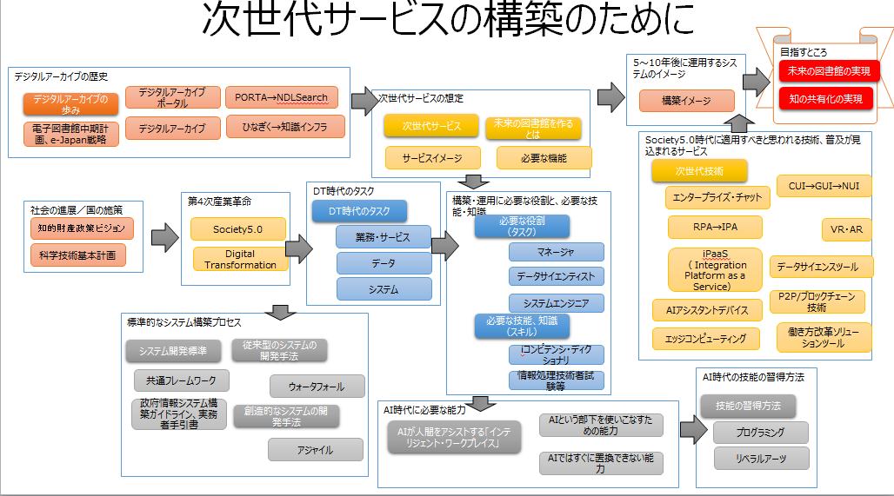
- Bib40-02 電子図書館サービスの始動
- 「知の共有化」とは
- アーカイブ機関に限らず、あらゆる組織、個人がデジタル化した情報を共通的に保存し利活用できるようにする基盤を「デジタル知識基盤」といい、「デジタル知識基盤」により、新たな知識を創造し還流することを「知の共有化」として記述する。
- コミュニケーションの保存を振り返る
- 記録における時間と空間への広がり
- 日本における印刷の嚆矢
- デジタル化
- インターネット文化でのデジタル化の意義
- 共通のコンセンサスを目指して
- 知識の断片化と浮遊
- 公共的基盤として
- 日本における大規模デジタル化の端緒
- 21世紀型図書館としての関西館
- 電子図書館サービス20年の歩み
- 第1ステージ【1994～1998】 揺籃期
- 第2ステージ【1998～2002】 始動期
- 第3ステージ【2002～2009】 サービス離陸期
- 第4ステージ【2009～2012】 発展期
- 第5ステージ【2012～2014】 総括、見直し期、再始動期
- 第6ステージ【2015～2024】 本格的なデジタル情報の普及期、サービスの変革期
- 電子図書館構想の策定及び実施に向けた検討
- 構想策定の経緯
- 電子図書館構想のあらまし
- 基本認識
- 国立国会図書館が実現する電子図書館
- 電子図書館の「蔵書」の構築
- 国会及び行政・司法の各部門へのサービスの強化
- 電子図書館の協力活動
- 電子図書館の制度的課題
- 電子図書館の技術課題
- 構想実現に向けて
- 電子図書館構想に基づいた当初の取り組み
- 電子図書館基盤システム計画
- 電子図書館基盤システムの機能
- 電子図書館構想と実証実験
- 全国公共図書館総合目録ネットワーク事業
- パイロット電子図書館実証実験プロジェクト
- 電子図書館実証実験の成果の継承
- 各種協力活動への取り組み
- 国際的協力活動
- 国内各機関との協力活勳
- Bib40-03 電子図書館サービスから知識インフラの構築へ
- 1990年前半に策定された電子図書館関連の構想
- 電子図書館サービスの理念
- 1990年代中旬に我が国で最初の実用化実証システム
- 政府の動きとの関係
- 政府のe-Japan重点計画2003等
- 「国のデジタルアーカイブ構想」、「ジャパンウェブアーカイブ構想」、「国立デジタルアーカイブポータル構想」
- 国立国会電子図書館中期計画2004
- ①「デジタル･アーカイブの構築」
- 著作物のデジタル化
- 著作単位での収集
- ウェブサイトの収集
- ②「情報資源に関する情報の充実」
- ナレッジデータベース
- ③「デジタル･アーカイブのポータル機能」
- デジタルアーカイブポータル
- 電子図書館のサービス
- 国立国会図書館デジタルコレクション（デジコレ）
- 著作権法の一部を改正する法律（2019年1月1日施行）
- オンライン資料収集制度（eデポ）
- 国立国会図書館インターネット資料収集保存事業（WARP）
- リサーチナビ、レファレンス協同データベース
- デジタルアーカイブのポータル
- デジタルアーカイブポータルプロトタイプ（NDLDAP）
- (1)サービス要件定義において
- (2)システム化において
- PORTA
- インキュベータとしてのPORTAの役割
- NDLサーチ
- 国立国会図書館総合目録ネットワーク事業(ゆにかねっと）
- 「知の共有化」を試行した活動【2010～2013年】
- 知識インフラ構想（電子図書館の発展形）
- 東日本大震災アーカイブ（ひなぎく）（分野を限定した知識インフラの実現形）
- Bib40-04 ICTの急速な発展と図書館を取り巻くサービスの変革
- クラウドコンピューティングの世界でのサービス連携【2007年想定】
- 国の施策
- 経済財政運営と改革、科学技術、知的財産、文化芸術、経済産業、IT、サイバーセキュリティ
- 【参考】
- 【参考】ITトレンドとこれからのビジネス【ITトレンド】
- 【参考】今後5年の重要技術トレンド【ITロードマップ2018】
- サービスの変革の時代と次世代図書館サービスは？
- 新技術動向
- 「第4次産業革命」
- AI等の急速な発展
- ・IoT, クラウドコンピュータ
- ・知識情報資源のビッグデータ化
- ・自然言語処理、画像解析、、、
- ・ディープラーニング
- 「デジタルトランスフォーメーション（デジタル革命）」
- 次世代図書館サービス
- サービスの変革の時代の次世代図書館サービスは？
- 「未来の図書館を作るとは」【2012年長尾先生】を読み返して
- 「未来の図書館」の概念
- 「電子図書館」（1994年長尾真著）では、
- 「未来の図書館を作るには」が発行された2012年初めは、
- AI等の新技術の活用の可能性は？
- 知的情報資源のビッグデータとしての活用の可能性は？
- Bib40-05 「知の共有化」の実現を目指した構想（知識インフラ構想の実現イメージ）
- 「知の共有化」とは
- 「未来の図書館を作るとは」
- アーカイブに関連した国の活動の方向性
- 「知的財産政策ビジョン」（2013年6月7日知的財産戦略本部決定）
- ナショナルアーカイブ関連の国の動き【2013～2014年】
- 書籍のナショナルアーカイブ構想
- 電子書籍分野のアーカイブの役割
- 電子書籍分野のアーカイブの機能モデル
- 文化情報資源のナショナルアーカイブ構想
- 各種デジタルアーカイブ構築施策の一元化
- あらゆる分野、業種業態を越えた情報資源を一元的に利用できるアーカイブ
- 文化財を含めたナショナルアーカイブの機能イメージ
- 恒久的保存基盤（あらゆる情報の恒久的保存）
- 知識創造基盤（新たな知識創造活動の場）
- 知識創造支援機能
- 知識創造活動
- 新たな知識創造の場としての図書館
- 知識利活用基盤（情報発信）
- 運用基盤
- 「デジタルアーカイブジャパン」として実現に向けて
- Bib40-06 次世代システムの構築・運用タスクと、タスクの遂行に必要なスキル・知識
- Bib40-06-1 「知の共有化」システムの標準的な構築プロセス
- 【例示】公共図書館のシステム構成イメージ
- 概要
- システム開発標準としての「共通フレーム2013」
- 「共通フレーム2013」とは
- 共通フレームの特徴
- 共通フレームのプロセス体系
- 「要件」の4階層
- 共通フレームに含まれている主な考え方
- 実務に活かすIT化の原理原則17ヶ条
- 【参考資料】
- ユーザのための要件定義ガイド
- Bib40-06-2 政府情報システムでの標準的な構築プロセス
- 「共通フレーム2013」に準拠したした政府標準ガイドラインの活用
- システム開発及び人材育成・確保に関して政府の新しい方法論
- 標準ガイドラインの概要
- 標準ガイドラインに沿った実践の留意点
- 参考資料
- 「知の共有化」等でのデータサイエンス領域での要件
- システムで何ができるようにするのか（個別機能要件）
- どのようなデジタルコンテンツを用意するか（コンテンツ構築要件）
- Bib40-06-3 「知の共有化」システムの構築に必要なスキル・知識
- サイバーセキュリティ対策として考慮すべき事項と必要なスキル・知識
- 【参考】企業経営のためのサイバーセキュリティの考え方の策定について【NISC】
- サイバーセキュリティ対策として考慮すべき事項
- 「中小企業向けサイバーセキュリティ対策の極意」【東京都発行】
- 「情報システムの整備と運営管理を調達する際の情報セキュリティ対策として考慮すべき要件メモ」（政府情報システムの整備及び管理に関する標準ガイドライン実務手引書より抜粋）
- サイバーセキュリティ対策に必要なスキルと知識
- システムを活用したサービスの企画・構築・運用に必要な人材育成
- 業務に必要なスキル・知識の習得
- iコンピテンシ・ディクショナリ（iCD）
- 業務遂行のタスクとスキル・知識の蓄積のスキーム
- iコンピテンシ・ディクショナリ（iCD）を活用した業務の遂行とスキル・知識の選択的習得
- タスクディクショナリ
- スキルディクショナリ
- 知識ディクショナリ
- データサイエンス領域でのタスクとスキル
- 網羅的なスキル・知識レベルの確認
- 情報処理技術者試験によるスキル・知識の網羅性の評価認定
- 共通レベル定義
- 分野
- 情報処理技術者試験
- Bib40-02 電子図書館サービスの始動
- 「知の共有化」とは
- アーカイブ機関に限らず、あらゆる組織、個人がデジタル化した情報を共通的に保存し利活用できるようにする基盤を「デジタル知識基盤」といい、「デジタル知識基盤」により、新たな知識を創造し還流することを「知の共有化」として記述する。
- コミュニケーションの保存を振り返る
- 記録における時間と空間への広がり
- 日本における印刷の嚆矢
- デジタル化
- インターネット文化でのデジタル化の意義
- 共通のコンセンサスを目指して
- 知識の断片化と浮遊
- 公共的基盤として
- 日本における大規模デジタル化の端緒
- 21世紀型図書館としての関西館
- 電子図書館サービス20年の歩み
- 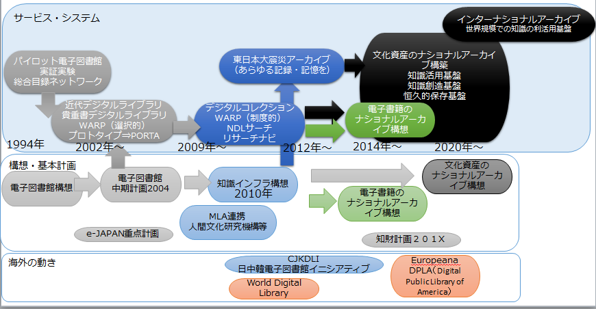
- 1980年代から、海外の多くの先進的な図書館同様、日本でも電子図書館事業に取り組み、1994年に我が国で最初の大規模な電子図書館の実証実験プロジェクトがNDLにより実施された。その後、NDLは、2002年から本格的なサービスとして離陸し発展させて、現在に至っている。
- 第1ステージ【1994～1998】 揺籃期
- 計画策定と実証実験
- 第2ステージ【1998～2002】 始動期
- 組織整備、コンテンツ作成開始、システム構築
- 第3ステージ【2002～2009】 サービス離陸期
- 専管的な部署（関西館電子図書館課）の設置
- 各種サービスの提供
- 第4ステージ【2009～2012】 発展期
- 国内外における各種連携・協力
- コンテンツの質・量・種類の拡充
- 第5ステージ【2012～2014】 総括と再始動期、見直し期
- 将来構想、使命・目標設定
- リニューアル総括、次期最適化計画
- 基本問題検討
- 第6ステージ【2015～2024】 本格的なデジタル情報の普及期、サービスの変革期
- 2020年東京オリンピック後、数年のサービスを見据えて
- 電子図書館構想の策定及び実施に向けた検討
- 電子図書館構想と実証実験
- 21世紀の高度情報社会において、地球規模の知的財産を誰でも容易に利用できるように
- 地球上に広く分散して個々に収集・蓄積されている知的資源を、空間的・時間的制約を越えてアクセス可能とする環境を提供するための実証実験
- 成果であるシステム及びデジタル化コンテンツは、その以降の電子図書館サービスのベースとして引き継がれている。
- 構想策定の経緯
- 電子図書館構想のあらまし
- 基本認識
- 国立国会図書館が実現する電子図書館
- 電子図書館の「蔵書」の構築
- 〈二次情報〉
- 〈電子情報として収集するもの〉
- 〈印刷物の遡及電子化〉
- 〈インターネット情報資源〉
- 〈外部情報資源へのナビゲーション〉
- 国会及び行政・司法の各部門へのサービスの強化
- 電子図書館の協力活動
- 電子図書館の制度的課題
- 電子図書館の技術課題
- 構想実現に向けて
- 電子図書館構想に基づいた当初の取り組み
- 電子図書館基盤システム計画
- 電子図書館基盤システムの機能
- 電子図書館構想と実証実験
- 全国公共図書館総合目録ネットワーク事業
- パイロット電子図書館実証実験プロジェクト
- 電子図書館実証実験の成果の継承
- 各種協力活動への取り組み
- 国際的協力活動
- 国内各機関との協力活勳
- 次世代電子図書館研究開発プロジェクトヘの協力
- BBCCとの連携実験
- 電子図書館全国連絡会議
- Bib40-03 電子図書館サービスから知識インフラの構築へ
- 【参考】20年の歩み
- 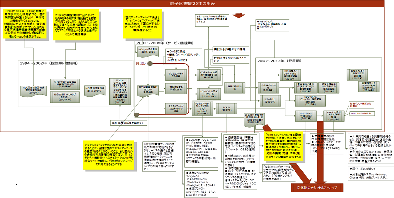
- 政府の動きとの関係
- 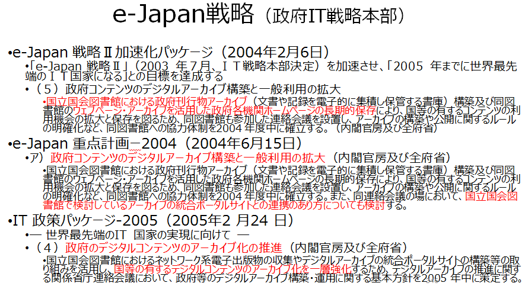
- デジタル・アーカイブの推進に向けた申入れ（2003年）
- 「国立デジタル・アーカイブ（略称：Ｄアーカイブ）」構想の推進
- 「ジャパン・ウェブ・アーカイブ」構想の推進
- 「デジタル・アーカイブの推進に向けた申し入れ-「COOL」（かっこいい）国家をめざして-」(2004年6月)
- 「ジャパン・ウェブ・アーカイブ」構想の推進
- 「国立デジタル・アーカイブ・ポータル」構想の一層の推進
- 【参考】2008～2009年
- 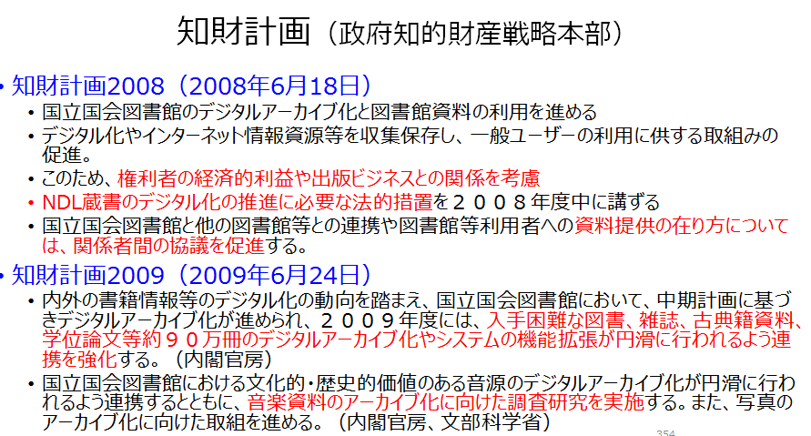
- 国立国会図書館電子図書館中期計画2004
- デジタルコンテンツを広汎な利用者に提供するために、NDLが国のデジタルアーカイブの重要な拠点となるということ、また国内外の多様な利用者層の需要に応じ、日本のデジタル情報全体へのナビゲーションを行う総合サイトを構築し、利用者がワンストップで利用できるようにすることを目指すこととした
- 電子図書館中期計画2004策定の背景
- アクションプランとしての3つの柱
- １つ目は、「デジタル･アーカイブの構築」 である。これには、書籍のデジタル化の推進と、インターネット情報の収集と恒久的保存の２つがある。
- ２つ目は、「情報資源に関する情報の充実」で、レファレンス情報などナレッジの蓄積を蓄積し提供提供すること
- 3つ目は、「デジタル･アーカイブのポータル機能」を提供すること
- 電子図書館中期計画2004の実現イメージ
- 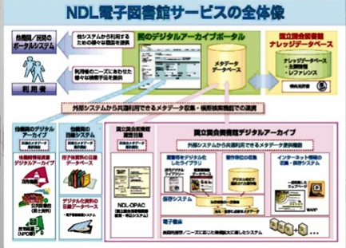
- デジタルアーカイブの構築
- 資料のデジタル化に関しては、NDLは、2009年5月から大規模なデジタル化を開始し、2011年までに、冊子体としては230万冊、約2億枚の画像をデジタル化した。
- また、インターネット資料の収集に関しては、NDLは、2010年4月に国等のウェブサイトの制度的な収集を開始した。
- さらに、いわゆる電子書籍・電子雑誌に類するオンライン資料は、2013年1月から、無償でDRMによるアクセス制限が掛かっていない資料についてのみの収集を開始した。
- デジタル化および収集した資料の提供に関しては、著作権保護期間の満了もしくは著作権者から許諾を得た資料は、インターネット上に公開している。デジタル化した資料のうち、市場で入手困難な資料に関しては、公共図書館等で閲覧が可能になっている。
- 資料のデジタル化
- 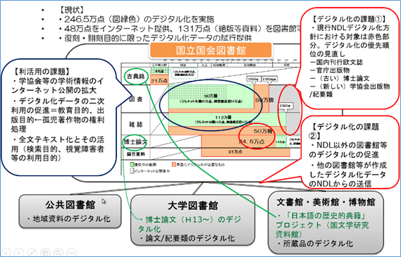
- 著作物単位での収集保存
- 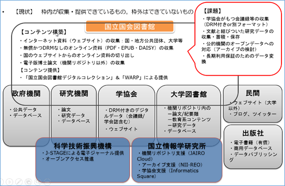
- 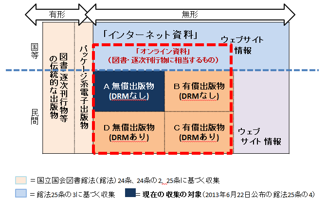
- 無償オンライン資料は、インターネット上から消失する可能性が高い。
- 当館だけでは不可能。
- 有償オンライン資料は、電子書籍市場が拡大する形の出版界を支援する方策を取ることが先決ではないか。（図書館での電子書籍サービス等も含めて）
- 有償電子書籍は、すぐに消失しない。→ダークアーカイブ化し、出版界が書庫として利用することの模索
- ウェブサイト単位での収集保存
- 国等の公的機関の網羅的な収集の実現方法（インターネットアーカイブ社との連携）
- 民間のインターネット情報の収集の実現（あらゆる記録・記憶を収集することの実現を目指して）
- 資料デジタル化と提供状況
- 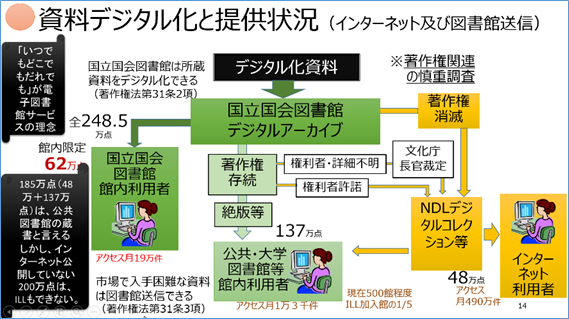
- 文化庁の著作権法の解釈変更
- 公共図書館、大学図書館でも絶版本はデジタル化ができる
- 公共図書館、大学図書館がデジタル化した資料も含めて、図書館送信ができる
- 著作権法の一部を改正する法律案（2019年1月1日施行予定）
- ①デジタル化・ネットワーク化の進展に対応した柔軟な権利制限規定の整備（第30条の4、第47条の4、第47条の5等関係）
- 著作物の市場に悪影響を及ぼさないビッグデータを活用したサービス等※のための著作物の利用について、許諾なく行えるようにする。
- ○所在検索サービス（例：書籍情報の検索）
- →著作物の所在（書籍に関する各種情報）を検索し、その結果と共に著作物の一部分を表示する。
- ○情報解析サービス（例：論文の盗用の検証）
- →大量の論文データを収集し、学生の論文と照合して盗用がないかチェックし、盗用箇所の原典の一部分を表示する。
- ②教育の情報化に対応した権利制限規定等の整備（第35条等関係）
- ICTの活用により教育の質の向上等を図るため、学校等の授業や予習・復習用に、教師が他人 の著作物を用いて作成した教材をネットワークを通じて生徒の端末に送信する行為等について、 許諾なく行えるようにする。
- ③障害者の情報アクセス機会の充実に係る権利制限規定の整備（第37条関係）
- マラケシュ条約※の締結に向けて、現在視覚障害者等が対象となっている規定を見直し、肢体不 自由等により書籍を持てない者のために録音図書の作成等を許諾なく行えるようにする。
- ④アーカイブの利活用促進に関する権利制限規定の整備等 （第31条、第47条、第67条等関係）
- 美術館等の展示作品の解説・紹介用資料をデジタル方式で作成し、タブレット端末等で閲覧可 能にすること等を許諾なく行えるようにする。
- 国及び地方公共団体等が裁定制度※を利用する際、補償金の供託を不要とする。
- 国及び地方公共団体等については、補償金の供託は不要（権利者が現れた後に補償金を支払う）
- 国会図書館による外国の図書館への絶版等資料の送付を許諾無く行えるようにする。
- 情報に関する情報の充実
- レファレンス協同データベース
- レファレンス協同データベース事業は、公共図書館、大学図書館、学校図書館、専門図書館等におけるレファレンス事例、調べ方マニュアル、特別コレクション及び参加館プロファイルに係るデータを蓄積し、並びにデータをインターネットを通じて提供することにより、図書館等におけるレファレンスサービス及び一般利用者の調査研究活動を支援することを目的とする事業。
- レファレンス事例
- 参加館で行われたレファレンスサービス（質問回答サービス）の記録。利用者の方々からの質問に、どのように回答したのかが記載されている。
- 調べ方マニュアル
- 特定のテーマやトピックに関する情報源の調べ方です。何かを調べたい時にまず押さえるべき基本的な情報源が紹介されている。
- 特別コレクション
- 個人文庫や貴重書など、参加館が所蔵する特殊なコレクションに関する情報
- リサーチナビ
- NDL職員が調べものに有用であると判断した図書館資料、ウェブサイト、各種データベース、関係機関情報（以下、「情報源」といいます。）を、特定のテーマ、資料群別に紹介するもの。
- 調べ方案内
- 特定テーマの調べものに役立つ資料や調べ方のノウハウをまとめた案内。
- 専門室のページ
- 国立国会図書館の各専門室が所管する特色ある情報源・資料群を紹介。
- テーマ別データベース
- 本の目次や内容などから資料を検索することのできるデータベース。
- デジタルアーカイブのポータル機能
- デジタルアーカイブポータルの構築に当たっての考え方
- 情報探索の行動パターンと提供すべきサービス
- 情報探索行動における図書館の方向性
- デジタルアーカイブ・ポータルの利用イメージ
- ポータルから見たデジタルアーカイブの要件
- コンテンツ仕様
- インタフェース仕様
- ポータルの構築に際しての考察のまとめ
- デジタルアーカイブポータルのプロトタイプ構築
- NDLは、中期計画での3つ目の柱であるポータル機能について、2004年10月から開発を開始した。
- 様々なデジタルアーカイブ内の情報を統合検索する仕組みの実用性を検証するために、デジタルアーカイブポータルのプロトタイプシステムとして、2005年7月に試験公開し、機能の検証を開始した。
- これが、現在の分野を越えたナショナルアーカイブ構想の原点であったと考える。
- 開発当初のサービス要件とシステム化
- (1)サービス要件定義において
- 利用イメージとして、
- 利用者の情報探索行動の全般をサポートすることを目指すこととした。
- 情報探索行動として、問題の定義、情報ニーズの識別、情報探索戦略の策定、情報の獲得（情報源の咀嚼、情報の抽出）、情報の統合（情報の組織化、提示）、評価（成果の評価、プロセスの評価）等のステップを想定した。
- このようにして目的の情報の存在を知るだけでなく、情報そのものの閲覧および入手先までナビゲートを目指すこととした。
- それを実現するために、
- 各デジタルアーカイブの構築の在り方にも言及した。交換用の標準的なメタデータ記述要素、記述規則の適用、交換用APIの実装を求めることとした。
- また、巨大な知識ベースとして「意味ある情報資源」として利用できるように、本文内容を組織化、検索できるように研究開発、技術開発が進むことも求めた。
- (2)システム化において
- 先進的かつ将来標準的な仕様となることが見込まれる技術を適用すること。
- オープンソースソフトウェア（OSS）・パッケージソフトを活用することとして、特に、適用事例が多いOSSを活用し、可能な限り新規開発はせず適用したソフトウェアのカスタマイズは必要最低限とすることとした。
- Webサービスとして他サービスから利用しやすいものとすることとして、各々の機能は独立したWebサービス機能として提供し、図書館界のみならず、デジタルアーカイブの世界で標準となり得る仕様の採用を目指した。
- PORTAの構築
- NDLは、プロトタイプでの検証を踏まえて、実用システムとして「PORTA」を構築し、2007年10月に正式公開した。
- システムアーキテクチャ
- システム基盤として、Web2.0時代のサービス指向アーキテクチャ（SOA）を適用し、仮想OS上でOSSを組み合わせ、Dublin Core（DC）に準拠した国際標準のメタデータ記述要素、記述規則、メタデータ交換の共通API（OAI-PMH、SRW（SRU/SOAP）、RSS、Z39.50等）を利用して、
- 商用を含めた外部サービスとマッシュアップによるサービス連携と、コンテンツマネジメントシステム（CMS）による機能追加の容易性の確保を目指した。先進的な検索機能として連想検索検索エンジン（GETA）等を利用したあいまい検索も実装した。
- 統合検索対象の拡大
- 統合検索対象は、画像イメージ形式で提供している近代デジタルライブラリーとテキスト形式で提供している青空文庫の統合検索から始め、同時代の資料が分散保存されている国立公文書館アジア歴史資料センターとNDL-OPAC、地域情報をまとめているアグリゲータサイトとしてデジタル岡山大百科等を、ワンストップで検索しコンテンツに辿り着けるようにした。
- 統合検索のために苦労した点
- データ提供機関に対して、統合検索への賛同を得ること。
- 大きな意義は、各機関のコンテンツの利活用が促進されることであり、また、利用者の利便性が向上することであったが、サービスが横取りされると誤解されることが多々あった、また、サイトへのアクセスが増えることを不安視され、なかなか賛同が得られなかった。
- また、連携には、提供機関のサイトで標準プロトコルの実装が必要であったが、
- ほとんどのサイトで、外部提供インタフェースを持っておらず、各サイト側に実装が必要であったが、開発ベンダーが法外な開発費を提示し、その費用が捻出できない状況であった。
- さらに、メタデータのマッピングの調整においては、
- それぞれの機関において、 Dublin Core（DC）をベースにした記述要素を適用できても、記述規則が異なり、統合しても内容として認識できない状況であった。特に、横断検索においては、メタデータの表記のゆれをカバーした検索はできず、調整には、膨大な時間を費やした。汎用的なメタデータのマッピング、記述規則等のルールの普及が必要であった。
- インキュベータとしてのPORTAの役割
- PORTAは唯一の統合検索サービスではなく、PORTAがインキュベータとなって、各利用者ニーズにあった様々な統合検索サービスが出現することを期待した。
- まず、継続して、デジタルコンテンツの可視化を目指すこととし、インキュベータの役割として、各データプロバイダに検索やサービス連携のためのAPIが実装されることの普及啓発活動を継続するとともに、外部機関においてPORTAの外部APIを利用した様々なサービスが出現することを期待した。
- また、利用者の情報探索行動において、統括可能情報の網羅性を高めるために、様々な機関から提供されるデータベースを分散デジタルアーカイブと位置付け、コンテンツの体系的な構築と、網羅性の高い統合検索サービスの実現を目指すこととした。
- さらに、単なるキーワードでの検索サービスではなく、意味的に関連付けるセマンティックウェブ・サービスでの連携を目指すこととした。
- Web3.0の時代を見据えて適用すべき技術と進め方
- 今後の機能強化のため、セマンティックウェブ技術を中核として、適用すべき技術として3つに分類した。
- (1)収集を容易にする技術
- 収集効率を高める技術（差分収集と再現技術を含む）、収集品質を高める技術、収集したサイトイメージから著作物を切り出す技術の適用を想定した。
- (2)管理を容易にする技術
- メタデータの付与を自動化・省力化する機能
- 書誌的事項は、情報の作成元が作成することを基本としつつ、管理、検索に十分なメタデータが付与されていない場合は、多少精度が低くてもメタデータは可能な限り自動付与する機能、自動付与されたメタデータの確認作業を省力化する技術の適用を想定した。
- セマンティックウェブ技術の活用
- 当時、集合知を利用するWeb2.0から、意味的情報を相互利用するWeb3.0が叫ばれた時期であり、Web2.0の要素として、Blog、Forksonomy、Ajax、Mashup等の技術、更にWeb3.0の要素として、RDF、SKOS、オントロジー、GRDDL、SPARQLの技術の適用を想定した。
- 蔵書管理指向からサービス指向へ
- 将来的には、目録を利用者側の視点から見直すモデル（FRBR）に基づくメタデータの再構築も想定した。
- 検索を容易にする技術
- 従来型のキーワードマッチングによる検索だけでなく、キーワードサジェストやクラスタリング検索等により、検索候補を推定する技術を活用した検索機能も想定した。
- (3)PORTA構築の進め方
- 進め方として、図書館の枠を超えた国際標準、業界標準を積極的に適用するとともに、政府機関、民間を問わず、国内外の研究機関、研究者等と連携して調査研究を進め、関係機関との共同構築、オープンソースの利用、単独でのトータルシステムを目指すのではなく、各機関の研究成果を組み合わせてマッシュアップによるサービス構築を想定した。
- まずは、海外ではIIPC、国内では様々な技術の研究開発性を保有しているJST、NII、NICT、AIST、IPA等の政府機関、大学の研究室との連携、有用な検索サービスを実施している商用ポータル機関（Google、Yahoo等）との連携によるウェブ協調型のサービスの提供を目指した。
- 【紙とデジタルを合わせた】トータルな次期図書館システムを目指して
- 2009年当時の冊子体資料を扱う従来型の図書館システムの最大の問題は、運用・保守作業、機能拡張コストが肥大化して、機能拡張により新たな利用者ニーズに応えるための機能拡張ができなくなったことである。そのために、NDLは、下記のような方針により、全面リニューアルすることとした。
- 紙・デジタルを問わずトータルな次期図書館システムの構築と提供の実現を目指す。
- NDLサーチを、図書館ポータル、次世代OPAC、PORTA、ゆにかねっとを統合した入口機能とする。
- 新規開発を極力なくす。
- 実現すべき機能とレベルを明確にしたシステム化要件定義書により、見積もり内容を的確に判断する。
- 特定ベンダーしか提案できないRFPにならないようにして、競争原理が働く調達を行う。
- 従来型業務・サービスは、パッケージで実現できない業務は、業務の内容や流れを見直し、可能な限りパッケージの仕様に合わせる。
- この方針に基づきシステム開発を進めた。
- 冊子体刊行物の収集・組織化業務及び、蔵書検索・申込システム「NDL-OPAC」を、パッケージに切り替えることによる開発・運用コストを大幅に削減し、デジタル化資料の来館者サービスシステム、国立国会図書館サーチ等、デジタル時代の次期図書館利用者サービスの基本機能を充実させた。
- 国立国会図書館サーチ（NDLサーチ）
- はじめに
- NDLは、PORTAの後継の情報探索サービスシステムとして、2012年から正式に提供を開始した。のちに提起される「知識インフラ」のフレームワーク作りのベースとしたサービスであり、振り返るとLinked Data、Linked Open Dataと同一の方向性を指向したものとなっていた。
- NDLは、システムの構築に当たっては、様々な視点を持つ専門家の参画のもとで、サービス要件を確定させ、サービス要件を満たす機能を実装するためのシステム化要件を定義した。段階的な実装を想定し、OSSを含めて、その時点での最適な適用技術、パッケージを示す技術標準適用ガイドラインを踏まえて、開発を進めた。
- 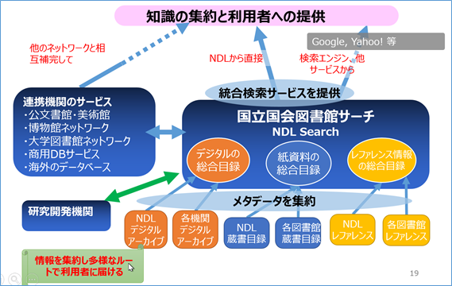
- 機能の概要
- NDLは、FRBRのモデルに沿って同一著作、原作から様々な媒体や形式に派生して発行されている著作物を書誌事項で体系的に把握できるように著作単位でグルーピング表示する機能、検索キーワードが明確でなくても想定されるキーワードサジェスト機能、障害者向け機能、検索ワード、外部サービスを活用して内容表示を日中韓英に翻訳して表示する機能、個人ごとの検索要件、検索範囲をあらかじめ特定できるパーソナライズ機能、スマートフォン対応機能等を実装した。
- NDLは、交換用メタデータとして、冊子体出版物以外の情報への適用を想定して従来の仕様をよりシンプルにしたDC-NDL(Simple)と、セマンティックウェブに適合した記述モデルであるRDFをデータの記述に使用し、FRBRのWork、Manifestation、Itemを体系的に定義したDC-NDL(RDF)を交換用メタデータ記述要素・規則として定義した。
- NDLは、メタデータハーベスト、横断検索のためのWebAPIを設定し、そのAPIの実装を働きかけることにより、連携先の一層の拡大を図るとともに、外部システムでメタデータを利活用のためのWebAPIとして、検索結果や新着書誌情報をFeedly等のニュースリーダで確認できるように、RSS配信する機能、DC-NDL(RDF版)、JSON形式でダウンロードする機能等の実装を強化し、「情報ハブ」の役割を提供した。
- また、著者名典拠、件名典拠情報に関しては、国立国会図書館典拠データ検索・提供サービス（WebNDLA）として、キーワード検索、NDC分類記号検索により検索できるほか、NDLサーチと連携し、関連キーワードの提示、典拠コントロールされた各標目による書誌データの再検索など多様な検索機能を提供した。また、全典拠データの個別ダウンロード、国立国会図書館件名標目表（NDLSH）の収録範囲となる典拠データを、RDF/XML形式、 RDF/Turtle形式、 JSON形式で、ダウンロードすることを可能とした。
- サービスの状況
- NDLサーチでは、人間文化研究機構の6構成機関の研究資源共有化システム（nihuINT）、国立美術館の4つの美術館が所蔵している作品の総合目録、商用の電子書籍ポータル（hon.jp）との連携等のPORTAが担ってきたデジタル情報のポータルとしての役割を継続するとともに、
- ゆにかねっとが担ってきた各地の公共図書館蔵書の総合目録としての役割を引き継いだうえ、NDL-OPAC、インターネット資料収集保存事業（WARP）、国立国会図書館デジタルコレクション、国会会議録検索システム、リサーチ・ナビ（調べ方案内）、レファレンス協同データベース等のNDLの主要データベースを統合検索し、
- 図書館、美術館、博物館、文書館、政府機関、新刊書籍の出版予定情報としてJPOの近刊図書情報、Japan Knowledge等の商用データベースなど、200DB、約1億件の書誌・メタデータを横断的に検索できるようにした。
- 検索対象が必ずしもデジタル化されてインターネットで閲覧可能なコンテンツでなく、所在情報により入手手段へのアプローチに留まるものも多いが、今後各機関によるデジタル化が進めば、インターネットで閲覧できるコンテンツへのナビゲーションも充実すると思われる。
- また、統合検索のほかに、検索キーワードを使った外部サービス検索として、WorldCat、WebCat Plus、Wikipediaでの再検索、更に入手手段として、各種オンライン書籍・電子書籍販売サイト、古本屋ポータルサイトへのナビゲートも行った。
- 最近の進展としては、公共図書館からのデータ提供方式のOAI-PMH / DC-NDL(RDF) への切替、ジャパンリンクセンター（JaLC）との連携によりDOIでの固定URLでの検索、WebNDLAからVIAFへのナビゲートも可能になっている。
- システムの機能モデル図
- 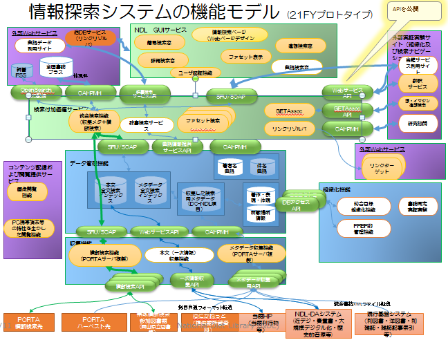
- 連携方針・連携モデル
- 統合検索先の拡大においては、連携可能なところから進め、網羅性の確保のため、分野ごとの中核的なデータベースに標準的な連携機能の実装を働きかけてきたが、標準仕様が浸透してきた状況において、NDLは、改めて連携方針・連携モデルを提示し明確にした。
- (1)連携実施計画策定の課題・背景
- 日本におけるメタデータ提供のプラットフォームとしての認知度が高まりつつある今、連携可能な範囲での拡張ではなく、目標と計画を設定して内外に示す必要がある。
- ナショナルアーカイブ（構想）におけるコンテンツ検索・提供機能を担うことを見据える必要がある。
- 図書館等の情報機関が保持するメタデータの集約及びAPIを通じた一般への提供により、政府が推進する「公共データの民間開放（オープンデータ）」の一翼を担う必要がある。
- (2)連携方針・連携モデル
- 次の5項目を連携方針の柱とする。
- 日本の刊行物及び刊行物と同等の内容を有するコンテンツの網羅を志向。
- 公的機関、学術研究機関、図書館・文書館・博物館・美術館等の文化機関が作成し、インターネット上で提供している一次情報（コンテンツ）、二次情報（メタデータ）及び参考情報等を対象とする。
- 一般利用者にとって有用性が高いコンテンツを持つシステムを優先。その際、一次情報の入手までの障壁が低いシステムを重視。
- APIを実装したシステムを優先。メタデータ授受に用いるフォーマットとして、DC-NDL(RDF)を推奨。
- 効率的に検索対象を拡大するために、個別のシステム（=data provider）との連携よりも、それらを集約した統合検索サービス（=aggregator）との連携を優先。
- つまり、APIは普及期にありインキュベータとしての役割を終了し、既にAPIが実装されているシステムとの連携を拡大し、人間文化研究機構、JST、NII等のように、各所管において、統合データベースを提供しているサービスとの連携により、効率的に網羅性を確保するということである。
- 公共的書誌情報基盤
- 情報内容として整理・要約されている出版物に関する情報の共有化と利活用は最も重要視される。
- 公共的書誌情報基盤は、出版界が作成する出版情報（販売促進情報）を活用した図書館での書誌作成の省力化を目指すもので、出版界と図書館界が持つ著者、著作の書誌・書評等の情報の共通識別子によるLinked Data化により、出版情報の網羅的なデータベースの構築と共有が期待できる。
- 公共的書誌情報基盤の整備（2010年）
- 出版関係機関と協力し、我が国を代表する標準的な書誌情報を作成・提供する公共的基盤を整備するものである。出版文化の基礎となる質の高い出版・書誌情報が、無償もしくは廉価にて、迅速またタイムリーに読者、利用者に届けられることを目的とするものであった。
- また、この事業によりNDLの納本事務がより網羅的かつ円滑に行われることが期待された。
- 当時の想定は、次のようなものであった。
- 近刊情報は、出版物のISBNとNDL書誌IDが関連付けられるように、出版社からISBNが付与された書誌情報が、JPOを経由してNDLに送られ、JPNO、 書誌IDを付与して、近刊情報として公開する。その近刊情報をJPOを経由して取次に送ることにより、共通の識別子で近刊情報が管理される。
- 新刊情報は、取次において、JPO近刊情報と現物を突合し、出版情報追記して、新刊情報とする。その情報をNDLにおいて、近刊情報を新刊情報として置換え、最低限の書誌事項を追記して新刊情報として公開すること。
- しかしながら、NDLでの実装においては、納本された新着情報の提供は、出版情報をインプロセス情報として提供することにより早まったものの、出版界と図書館界での情報の共有には繋がっていない。
- 全国書誌情報の利活用に向けた超党派勉強会での検討（活字文化議員連盟 2015年9月）
- 私が期待する結論としては、近刊情報、新刊情報が図書館で活用され、また、図書館での書誌情報、典拠情報が出版界での出版物に関するデータベースで利活用されることにより、出版情報を活用した書誌作成が効率化されるとともに、出版物の検索の網羅性が確保されることにより利用者が出版物を見つけやすくサービスの提供が容易になることである。
- 現状は？
- 「知の共有化」を試行した活動【2010～2013年】
- 新たな知識の創造のためには、分野を越えた知識の関連付けが必要であり、日本中に散在するコンテンツの所在を集中管理し、そこに検索をかければ、関連する全ての必要なコンテンツが得られるようにするものである。
- そこでは、単に情報を集めたものではなく、関連するものが有機的に結合され、ネットワーク的に統合化されたものであり、日本中にある芸術を含んだあらゆる学問・研究のコンテンツ、研究ツール、社会状況データ等が知識の形に組織化され、これらの知識・情報が公開され、全ての人が共有できる。
- 知識インフラとは
- 「知識インフラ」とは、情報資源を統合して検索、抽出することが可能な基盤で、国内の各機関が保有する情報を知識として集約し、新たな知識の創造を促進し、知識の集積・流通・活用と創造するサイクルの構築を目指すものである。
- 知識インフラの必要性
- 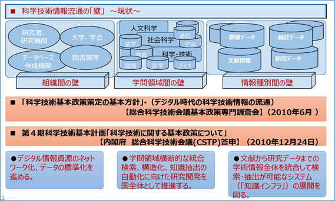
- 第４期科学技術基本計画「科学技術に関する基本政策について」（内閣府 総合科学技術会議2010年12月24日）が答申され、文献等研究情報のデジタル化、オープンアクセスの推進等とともに、「文献から研究データまでの学術情報全体を統合して検索・抽出が可能なシステム（「知識インフラ」）の展開を図る」とされた。
- これを踏まえて、NDLは、2011年に、第三期科学技術情報整備基本計画－知識インフラ構築に向けて」を策定した。
- 知識インフラの構築の目的
- 知識インフラは、科学技術研究活動の実践を根本で支え、科学、技術、学術、文化活動によって生み出される多様なデータ、情報、文献、関連する情報が組織化され、それらへの迅速で適切なアクセスを可能にすることで、次の研究、開発、教育、その他の社会的・文化的実践へとつなげる動的サイクルを形成することを目的としている。
- つまり、情報の生産→流通→アクセス→再生産という知識の循環を促進するネットワーク、プラットフォームとなることを目指すものであり、また、組織や個別学術分野を越えた知識の融合を可能とし、学際的な新しい知識やイノベーションの創造を容易にするものである。
- 知識インフラの機能
- 知識インフラにおいては、文字データだけでなく多様な形式で表現されるデータや情報を対象とし、収集、保存、識別、組織化、検索、表示、公開といった機能を実現させる必要がある。
- 利用者は、大量のデータに対して特定条件に適合したデータだけを抽出したり、多様な分野の情報を一括して検索したり、自分の関心に合わせて実体のリンクやネットワークを形成したりといったことが自由にできることが求められる。
- また、単語等による検索だけでなく、自動分類や収集された全体を見通した上での体系化や秩序化がなされることが期待される。
- 次世代技術の研究開発成果の活用
- 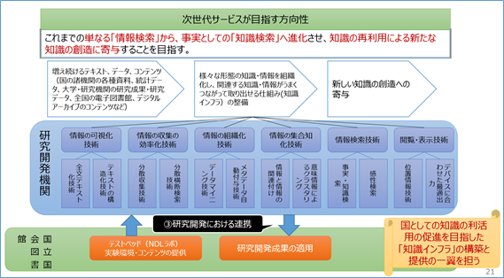
- 知識情報基盤の構築モデル
- 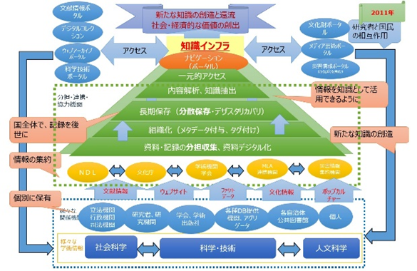
- NDLは、NDLサーチの前身のPORTAと、NDLデジタルデポジットシステムが進めてきた概念をベースとして、知識情報基盤の構築モデルを描き、後の「東日本大震災アーカイブ（ひなぎく）」により、大震災の分野に絞った「知識インフラ」の実現を目指した。
- 「ひなぎく」の実現に当たっては、情報の可視化技術、情報の収集の効率化技術、情報の組織化技術、情報の集合知化技術、情報検索技術、閲覧・表示技術等の次世代技術の研究開発成果の活用なしには実現できないと考える。
- 東日本大震災アーカイブ「ひなぎく」（知識インフラ構築の先行事例）
- 2011年3月には、東日本大震災が発災し、甚大な被害がもたらされた。国は、この大震災に関連する災害現象そのもの、災害前・災害直後・復興の過程、災害時の対応、他地域・次世代への教訓等のあらゆる記録を後世に残すこととした。
- NDLは、それを実現するために、大震災関連にフォーカスした知識インフラの構築の実現形の先行事例として、2013年3月には、大震災に関するあらゆる記録、記憶を保存し、一元的に検索できるようにする「東日本大震災アーカイブ（ひなぎく）」を構築した。
- 大震災アーカイブの構築は、従来の図書館の枠を越え「あらゆる情報、記録を収集、永久保存して、提供する」というNDLの使命を達成するために、今後数年間で取り組むべき事項の多くが含まれていると考える。
- 収集の基本的な考え方
- 大震災に関連する情報のすべてを、NDLだけで収集し保存することは不可能であり、国全体で分担して収集し、分担して保存する形を目指すべきである。
- (1)収集範囲
- 国全体で．様々な機関が保有している大震災前の記録、大震災後の事象・被害、状況の記録、今後の復旧・復興の記録等、過去から、現在、未来に亘って、可能な限り収集・保存する。
- 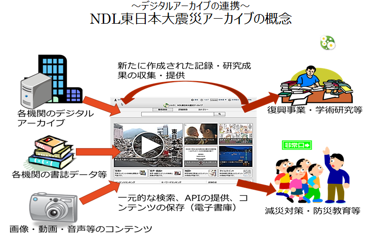
- (2)収集方法
- NDLによる直接収集
- NDLは、制度的に収集可能な記録のほか、他の機関が保存の対象としていない記録等については、積極的に受け入れる。
- 他機関による記録等の保存の推進
- 記録の保有機関、アーカイブ機関、NDLのいずれかで記録等を保存し、NDLは、その所在情報を把握できるようにする。
- メタデータの収集又は検索の機械的連携
- NDLは、現在のNDLサーチと同様に、可能な限り、メタデータの収集、もしくは横断検索による機械的連携を行う。
- 働き掛け・協議
- NDLは、国等の各機関で、国全体としての記録等の保存の必要性の認識を共有し、関係機関に協力を要請する。
- 「ひなぎく」のシステムイメージ
- 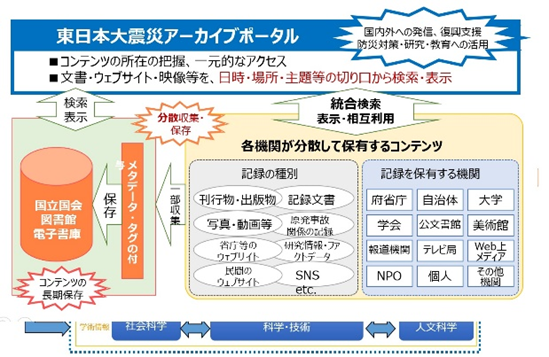
- これまでの成果であるNDLサーチ、ウェブアーカイブシステム、デジタルデポジットシステム等の既存のシステムをベースに、機能拡張する形でシステムを構築した。
- 構築に当たっては、効率的、効果的に進められるように、また、利便性の高いサービスにするために、次世代技術の実用化実証実験に取り組み、成果の積極的な活用が図れるように調査研究を進めた。
- 映像・観測データ等を受け取ることを想定して、処理能力、ストレージ容量を必要に応じて増強できる仕組みとして、分散処理サーバ(Hadoop)、分散ファイルシステム(GlusterFS)を導入した。
- 大震災アーカイブ自身が、災害で消失してしまわないように、ディザスタリカバリも考慮した。
- 画像・映像なども的確に検索ができるように、明確なメタデータが付与されていない情報にも可能な限りメタデータを自動付与する仕組みの導入を検討した。
- 本文も含めたテキストの全文インデキシング等を試行した。
- 次世代の図書館システムのモデルとなることを指向した。
- 「ひなぎく」での課題
- 構築・運用においては様々な課題が顕在化した。
- (1)技術面での課題として、
- 大規模分散ファイルシステム、分散処理システムを適用したが、実際には、想定ほどコンテンツが集まっておらず、将来的な実用化レベルでの検証ができていない。
- 計測機等から得られた生データ、分析の中間データなどのファクトデータの永久保存も目指しているが、情報に関するメタデータまでしか収集できていないため、ビッグデータへの対応の検証ができていない。
- ビッグデータとしてのウェブアーカイブから大震災関連の情報を自動的に切出し、コンテンツ単位で精緻な検索をする仕組みが構築できていない。
- 各アーカイブにおいて、検索およびハーベスト用のWebAPIが未実装なものが依然として多い。
- 収集前データに永続的識別子がない。
- 各アーカイブのメタデータとの記述規則の差異、付与されたメタデータに記述要素の不足が多い。
- 不完全なメタデータへの自動付与機能はない。
- 利活用のための検索・閲覧機能として、本文テキスト、イメージ認識技術等、内容を関連付けた検索技術が未成熟である。
- (2)人材面での課題としては、
- 専門分野に関する知見、文化資産の収集・保存・修復・公開の技能の不足。
- 文化資産を取り扱うための知識・技能の不足（プリザベーションエンジニア、コーディネータ、エンベデッドライブラリアン）。
- デジタル技術を活用したアーカイブ化のための知見の不足（アーキビスト、法規担当）。
- システム開発・運用管理の一般的な知識・技能の不足（システムライブラリアン、ITエンジニア）。
- (3)協力体制の課題として
- 縦割り行政のため、立法府であるNDLが進めることに警戒感。
- 「放送アーカイブ」とする構想に対する報道圧力・事後検閲の可能性に対する警戒感。
- (4)制度面・運用面での課題として
- 情報公開法では、各文書に対して最低保存期間が設定されるが、運用では行政文書管理簿に掲載されていない軽微な資料の保存期限は1年未満とされ、1年を経過すると廃棄される。
- 公文書管理法では、軽微な資料を含めて、歴史的公文書と指定されなければ公文書館に移管されない。
- 肖像権、プライバシー権、人格権等の権利処理がされなければ提供できないが、NDLは、提供を前提としない、いわゆるダークアーカイブとしての収集は行わないため、継続して維持できなくなったアーカイブのコンテンツを預かることもできない。
- 国有財産法、財政法の解釈では、アーカイブシステム機器等の運用維持が困難になったアーカイブ機関のために、Webサーバやストレージを無償で貸出すことができない。
- 現在のインターネット情報の制度的収集は国等のサイトに限定されているため、民間および個人のサイトは個別許諾により収集しなければならないが、個別に許諾手続きが必要なため、悉皆的な収集が困難。民間サイト、個人サイトは、ハーバード大学と連携し、インターネットアーカイブ社に収集を依頼している。
- このように課題は多いが、協力体制、制度面・運用面の課題は、大震災に限らない共通の課題であり、今後、国全体のナショナルアーカイブ構想の議論の中で、具体的な解決策の検討が進められることを期待している。
- Bib40-04 ICTの急速な発展と図書館を取り巻くサービスの変革
- 背景
- 図書館の将来ビジョン
- 将来ビジョン策定の取組“IFLA Global Vision”
- 関西館図書館協力課・武田和也
- 得られた重要な知見として，
- 「地域・館種や図書館での勤務年数を問わず，図書館の永続的な価値・役割について全世界の図書館員が共有している」
- 「各地域の特徴・要件を知ることが，共通課題を解決するために図書館界が一体化するにあたって必須である」
- また，取組から判明した，全世界の図書館員が共通して認識している図書館の重要な役割（highlight）10点，及び，それを改善するために必要な具体的条件（opportunity）10点を以下のようにまとめている。
- 1点目の共通認識は，「情報・知識への平等で自由なアクセスへの貢献」
- 図書館員が最も認めているものである。そして，その改善のため，図書館は「知的自由の擁護者となるべき」とする。
- 2点目は，「リテラシー・学習・読書支援への継続的な深い関与」
- 伝統的な役割として普遍的に自己認識されている。しかし，今後もその役割を持続するには「図書館の伝統的な役割をデジタル時代に合わせてアップデートするべき」とする。
- 3点目は「コミュニティへの奉仕」
- 奉仕活動の拡充には「コミュニティのニーズの深い理解と，効果的なサービスの策定が必要」とする。
- 4点目は「デジタルイノベーションの受容」
- 社会を豊かにする図書館の潜在能力を高めるためには「技術革新の最新情報に通じておくべき」とする。
- 5点目は，図書館界における「強力なアドヴォカシー活動の必要性を理解する指導者の存在」
- 今後は「全ての図書館員による，より多くの，かつ，より優れたアドヴォカシー活動が必要」とする。
- 6点目は，「資金調達が重要課題」
- コミュニティのニーズに対して効果的に対応するために，政策決定者からの財政支援の理解を得るため「図書館の価値と効果を理解してもらう」必要があるとする。
- 7点目は，図書館界の強化のための「外部との連携・協働の重要性」
- そのためには，孤立を避け，図書館員の「連携・協働の精神を涵養」することが必要とする。
- 8点目は「官僚主義や変化への抵抗を減少させたい」
- そのために「現在の図書館界の構造・行動様式を変化」させるべきとする。
- 9点目は未来のための「世界の記憶の守護者」という自己認識
- その具現化には，法的・技術的・財政的課題を解決し「世界の文書遺産へのアクセスを最大化する」努力が必要となる。
- 10点目は「若手図書館員が図書館の未来の形成に深く関与したいと考えている」
- その育成のため「若手図書館員に学習や能力開発，リーダーとしての機会を与える必要がある」
- 2019年8月には，IFLAの「戦略計画2019-2024」が策定される予定
- 「実行無きビジョンは幻影である」（A vision without execution is hallucination）とするIFLAによる本取組が，各種計画に如何に反映されていくか，今後も注目していきたい
- 知的財産戦略ビジョン～「価値デザイン社会」を目指して～【2018年6月12日知財戦略本部】
- 概要は別シート
- クラウドコンピューティングの世界でのサービスの連携【2007年想定】
- 様々な機関から提供されているWebサービスが、連携することにより、より効果的なサービスとなっていく。サービスが連携できる情報提供環境として、当時の大きなパラダイムシフトの一つとしてのクラウドコンピューティングは、今や個人の情報管理のインフラとして普及している。
- 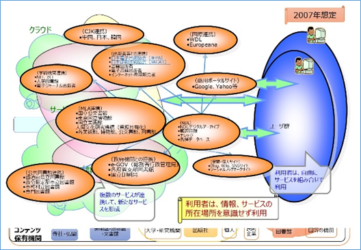
- 社会の進展／国等の施策
- 「経済財政運営と改革の基本方針2017」（骨太方針）【財政経済諮問会議】
- 経済再生
- 「未来投資戦略2017」【2017年75月30日未来投資会議】
- 日本再興戦略2016【2016年6月】
- 科学技術
- 第5期科学技術基本計画【2016年1月22日閣議決定】
- Society5.0の提唱
- 科学技術イノベーション総合戦略2017【2017年4月21日】
- 重点事項として、Society5.0の実現を掲げる
- 知的財産
- 知的財産政策ビジョン（2013年6月7日知的財産戦略本部(知財本部)）
- 知的財産推進計画2017（2017年5月内閣官房知的財産戦略本部）
- デジタルアーカイブの連携に関する関係省庁等連絡会
- デジタルアーカイブの連携に関する実務者協議会
- デジタルアーカイブジャパン推進委員会（第1回）（2017年9月5日）
- 第四次産業革命を視野に入れた知財システムの在り方について【2017年4月19日METI】
- 文化芸術関連
- 文化芸術基本法【2017年6月23日改正公布・施行 文化庁】
- 「文化芸術の振興に関する基本的な方針（第4次基本方針）」（2015年5月22日閣議決定）
- 経済産業関連
- 2017年版ものづくり白書【2017年6月6日METI】
- IT関連
- 高度情報通信ネットワーク社会形成基本法（IT基本法）（2015年2月1日改訂施行）
- 「世界最先端IT国家創造宣言」の改定（高度情報通信ネットワーク社会推進戦略本部（IT戦略本部））（2016.5.20閣議決定)
- 官民データ活用推進基本法（平成28年法律第103号）
- 「オープンデータ基本指針」（案）「オープンデータ基本指針」（案）【2017年5月23日官民データ活用推進基本計画実行委員会】
- 世界最先端ＩＴ国家創造宣言・官民データ活用推進基本計画【2017年5月30日付け閣議決定】
- サイバーセキュリティ関連
- サイバーセキュリティ基本法（2016年4月15日改正）
- サイバーセキュリティ戦略（2015年9月4日閣議決定）
- サイバーセキュリティ2016【2016年サイバーセキュリティ戦略本部】
- 人材育成・人材確保
- IT人材白書2017【2017年4月25日IPA】
- Society5.0
- Society5.0とは
- 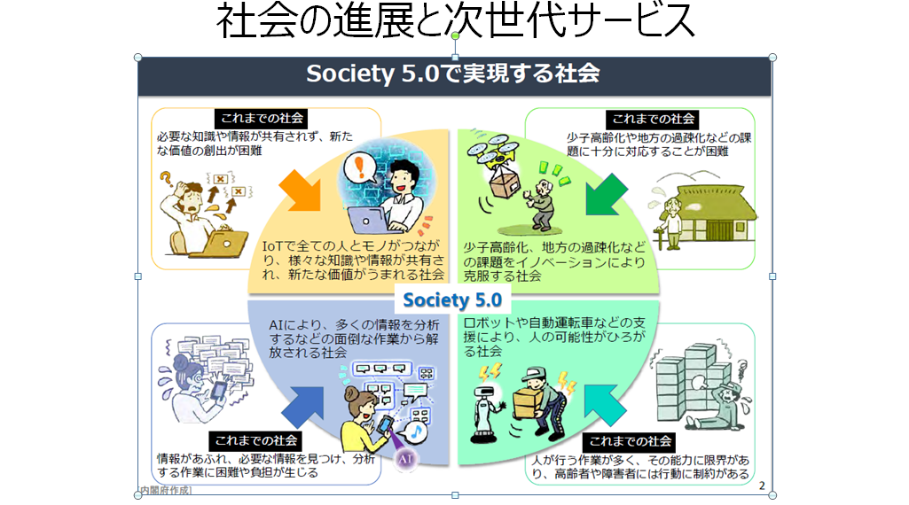
- Society5.0時代に適用すべきと思われる技術、普及が見込まれるサービス
- ITトレンドとこれからのビジネス【ITトレンドより】
- これまでのコンピュータ化、デジタル化の歴史
- 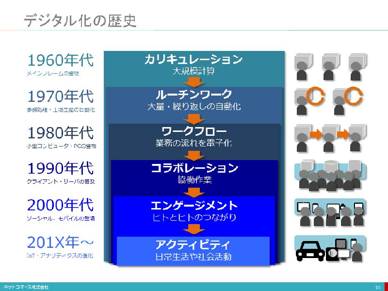
- 1950年代
- 1950年代、コンピュータがビジネスで使われるようになりました。1964年、いまで言うメインフレームの前身であるIBM システム/360が登場し、ビジネス・コンピューターの需要が一気に拡大します。そして、大規模な計算業務のデジタル化が始まりました。
- 1970年代
- 1970年代、コンピュータの用途はさらに広がります。伝票の発行や経理処理、生産現場での繰り返し作業など、定型化された繰り返し業務（ルーチンワーク）がコンピュータによって処理される時代になったのです。
- 1980年代
- 1980年代、小型コンピュータやPCの登場により、コンピュータは多くの企業に広く行き渡ります。また、企業内にネットワークが引かれ、個人や部門を越えた伝票業務の流れ（ワークフロー）がコンピュータに取り込まれデジタル化されるようになりました。
- 1990年代
- 1990年代に入り、PCは一人一台の時代を迎えます。そして、電子メールが使われるようになり、文書や帳票の作成をPCでこなし、それらを共有する需要も生まれました。そんな時代を背景にグループウェアが登場し、共同作業（コラボレーション）のデジタル化がすすんでゆきました。インターネットも登場し、コラボレーションはさらに広がりを見せ始めます。
- 2000年代
- 2000年代に入り、FacebookやTwitterといったソーシャルメディアが登場します。また、2007年のiPhoneの登場により、誰もが常時ネットにつながる時代を迎え、ヒトとヒトのつながり（エンゲージメント）が、デジタル化される時代を迎えます。
- そして、いま
- そして、いまIoTの時代を迎えようとしています。モノが直接ネットにつながり、モノやヒトの状態や活動がデータとして集められ、ネットに送り出される仕組みが出来上がりつつあります。私たちの日常生活や社会活動に伴う全てのアクティビティがデジタル化されようとしているのです。
- デジタルトランスフォーメーション(デジタル変革)
- デジタルフォーメーション（デジタル変革）とは、あらゆる情報がデジタル化され、IT技術によって、社会や産業、企業、人のあり方や働き方が変わっていくこと。
- デジタルトランスフォーメーション時代の技術及び市場のトレンド
- 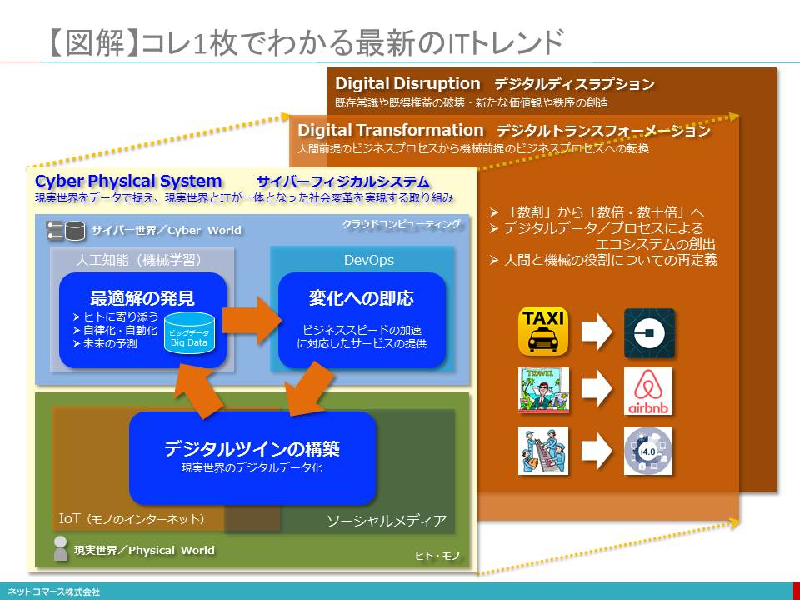
- ヒトを前提としないビジネス・プロセスへの転換を模索するデジタル・トランスフォーメーション【ITトレンドより】
- 「デジタル・ディスラプション（Digital Disruption）」を生みだす可能性
- これまで人間が関わることを前提にしていた仕事の流れを、人間を介さずITだけで完結する仕組みに置き換えることで、既存の業界秩序や既得権益を破壊
- 様々な分野で広く適用可能な技術が、経済発展の原動力となり社会構造の変化に役割を果たしてきました。このような技術は「汎用目的技術（GPT：General Purpose Technology）」と呼ばれています。
- IoT
- ビッグデータ
- 人工知能・ロボット
- 人間しかできなかった作業の効率化と、人間にはできなかった能力の拡張
- ドローン
- VR（仮想現実）とAR（拡張現実）
- ブロックチェーン
- ・・・
- モノのサービス化
- 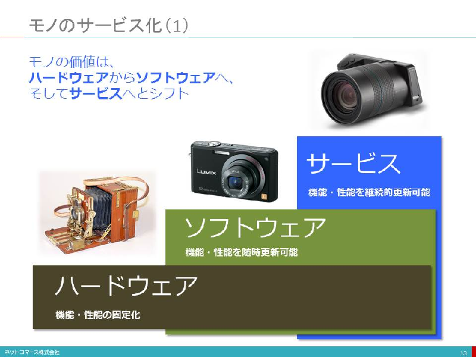
- 「モノ」の価値をハードウェアからサービスへとシフトさせようとしている
- かつてモノの性能や機能、品質や操作性は、ハードウェアの「細工」や「材料」によって物理的に実現していた。
- しかし、いま多くのモノには、コンピューターが組み込まれ、ソフトウェアによってこれらが実現している。
- もちろん、ハードウェアの価値が失われることはありませんが、ハードウェアだけでは機能や性能を生みだせない時代を迎えている。
- 「ハードウェア＋ソフトウェア」で構成された「モノ」がネットワークにつながれば、モノの価値の本質はサービスへとシフトする。
- モノがネットワークにつながることで、モノは購入した後も継続的に機能を向上させ進化し続ける。「モノ」は、それを作り、出荷することで完結するのではなく、作られたモノとその後のサービスが一体となって、モノの価値を生みだし続ける
- 今後5年の重要技術トレンド【ITコードマップ2018（NRI著）より】
- 第1章 ITロードマップ
%20【ゼミ資料xmind】.html_files//icons/flag.png) 図表2-1-6 AI関連技術のロードマップ
図表2-1-6 AI関連技術のロードマップ- 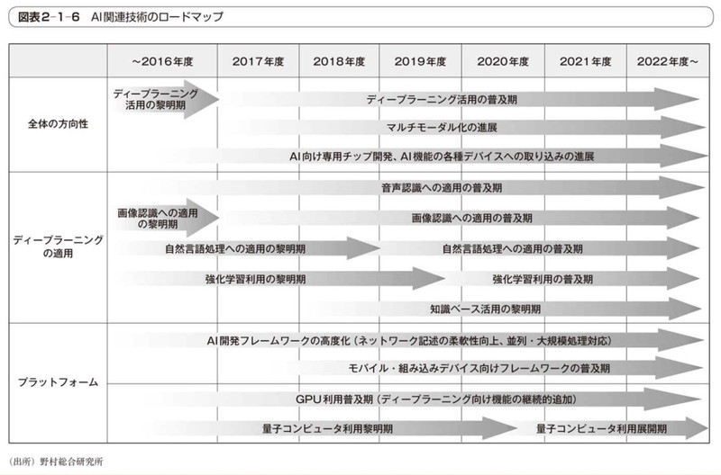
- 1.3 今後5年の重要技術トレンド
- ③ホワイトカラー業務の自動化の進展
- RPAからIPAへ
- 図表1-3-4 RPAとコグニティブ技術、BPMとの連携イメージ
- RPA(ロボティック・プロセス・オートメーション)
- 人が端末で行うクリック、コピー、ペーストなどの定型作業をソフトウェアに設定
- 事務スタッフやホワイトカラーの作業を代替してくれる仕組み
- IPA(インテリジェント・プロセス・オートメーション)←RPA
- 画像認識や文字認識、自然言語処理などのコグニティブ（認知）技術や、BPM(ビジネス・プロセス・マネジメント)技術が取り込まれる
- 非定型業務、より高度なビジネスプロセスの自動化も実現可能になる
- 業務の効率化、コスト削減が期待できる
- チャットボット
- 日常会話をインターフェースとしたプログラム
- 今後は何らかの事務処理を代行する「処理代行チャットボット」が増加する
- チャットボットからRPAに指示を出して、各種処理を自動化
- ④エッジコンピューティングの台頭
- コンピュータネットワーク内のユーザに近い場所（エッジ）で、データの蓄積や演算処理といったコンピュータ処理を実行する
- 図表1-3-5 クラウドコンピューティングとエッジコンピューティングの違い
- 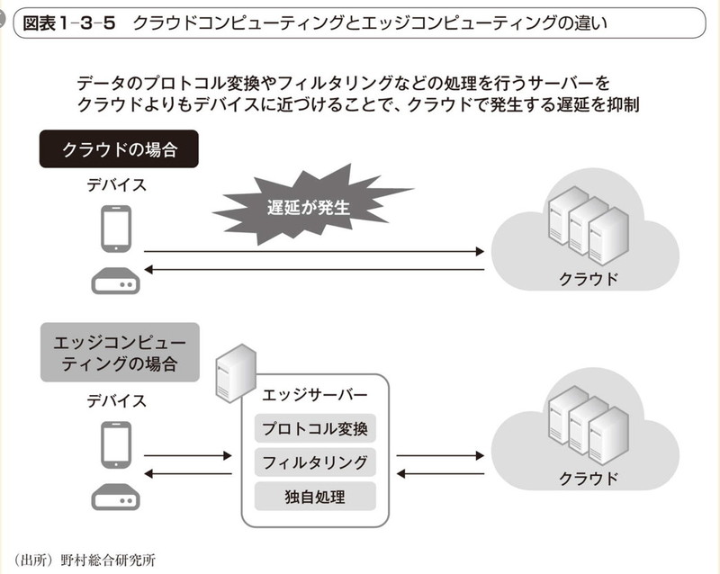
- エッジコンピューティングの活用シーン
- 図表1-3-6 エッジコンピューティングにおける機械学習アルゴリズムの利用イメージ
- 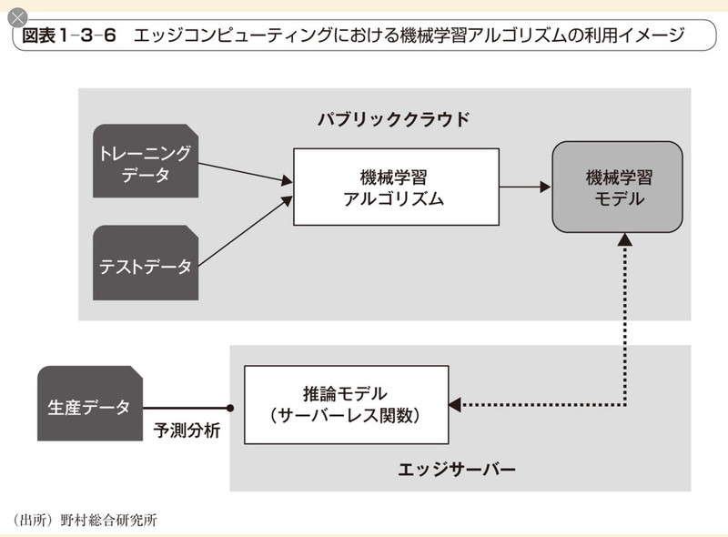
- ⑤データサイエンスの民主化
- プログラミング不要で使えるデータサイエンスツールの登場
- 数学・統計の専門知識や高度なプログラミングスキルがないビジネスユーザや業務コンサルタントが、データサイエンス業務を可能にするツールが登場している⇒「データサイエンスの民主化」
- 図表1-3-8 データサイエンスツールのトレンドの変化
- 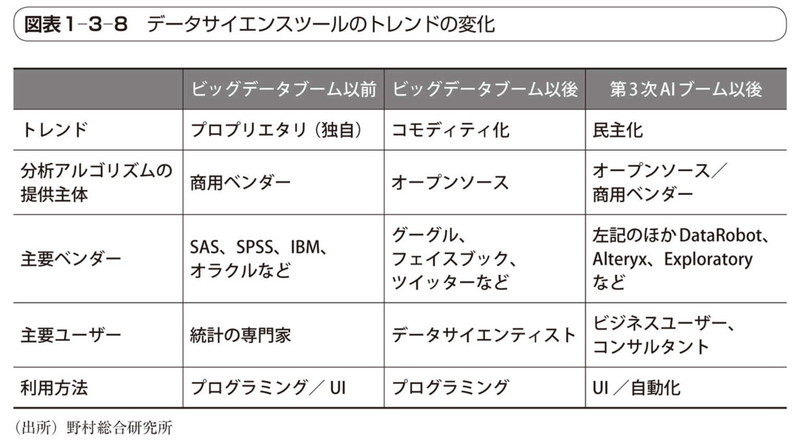
- DataRobot
- Alteryx
- Exploratory
- 第2章 5年後の重要技術
- 2.1 人工知能
-
- Word2Vecによる単語の分散表現
- エンコーダー・デコーダモデルによる文の処理
- 課題が多い文章の処理
- ①事例
- グーグルのニューラル機械翻訳
- Salesforce Einstein
- ②関連技術紹介
- マルチモデル・マルチタスク処理
- 「MultiModel」(2017年Google)
- 音声、画像、言語といったモダリティのタスクを1つのニューラルネットワークアーキテクチャで同時に学習することが可能
- 人間は、五感を介して情報を収集し、考え、必要な認識処理や行動を適宜実行する。これらのタスクは独立しているのではなく、全ての情報を統合的に処理することにより全体を理解し、必要に応じて適切な行動をとる
- ディープラーニングも複数のモダリティを適宜活用することにより性能を向上させていくと予想される
- 強化学習
- ③ITロードマップ
- 図表2-1-6 AI関連技術のロードマップ
- ~2018年度：ディープラーニングによる自然言語処理の黎明期
- 2018~2020年度：マルチモーダル化の進展
- 2021年度以降：AI技術の普及期
- 自然言語処理技術の進展
- ④日本におけるAI活用に向けた課題
- 第1の人材は、最新の論文を随時チェックし、他社に先んじて先端技術を習得し、自社製品・サービスに取り込むことのできる技術者
- 第2の人材は、多様なAI技術の特性を理解してそれらをビジネスに適用できる人材
- 【コラム】データサイエンティスト・プラットフォーム
- 一部のデータ分析業務を自動化し、データサイエンティストの業務を効率化することができる「データサイエンティスト・プラットフォーム」に注目が集まり始めている
- 図表1 一般的なデータ分析の業務の流れ
- 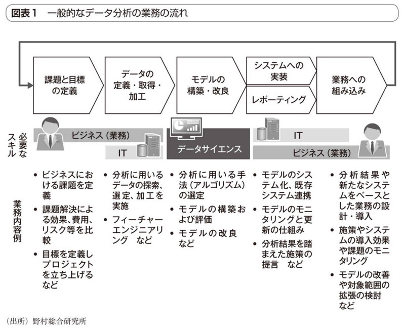
-
- 2.2 AIアシストデバイスデバイス
- 人と機械とのコミュニケーション方法
- CUIからGUI
- GUIからNUIへ
- NUI（Natural User Interface）
- より直観的かつ事前な動作で操作
- タッチ操作、ジェスチャー操作等
- VUI(Voice User Interface)
- ユーザの発話内容を理解し、音声で操作
- BMI(Brain-machine Interface)
- ユーザの脳波を読み取り操作
- 図表2-2-1 ユーザインタフェースの移り変わり
- 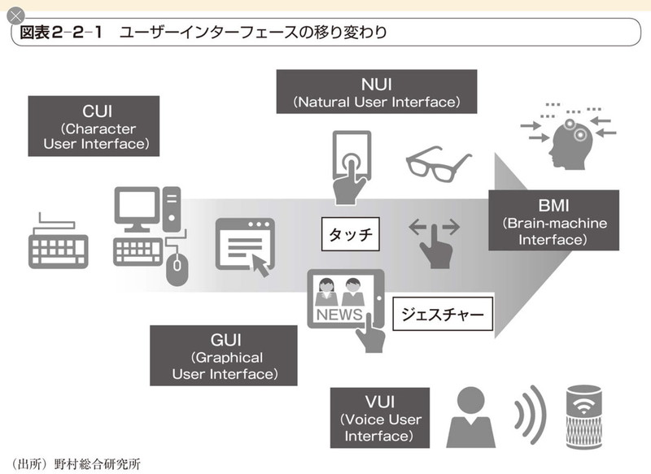
- ①事例
- アマゾンのAIアシスタントデバイス「Amazon Echoシリーズ」
- ②ITロードマップ
- AIアシスタントデバイスのアプリケーション（スキル）と開発プラットフォーム
- AIアシスタントデバイスでのユーザーインターフェースの変化
- 図表2-2-9 AIアシスタントデバイスのロードマップ
- 2018年～2019年度：スピーカー型AIアシスタントデバイスの普及と話者認識技術の活用が開始
- 2020年～2021年度：スマート家電や車載などにAIアシスタントデバイスが拡大
- 2022年度以降：AIアシスタントデバイス間の連携と、ユーザー状況（コンテキスト）データの活用の本格化
- ③実現に向けた課題
- 【コラム】チャットボットの活用事例と行方
- チャットボットの活用事例と行方
- 2.3 エンタープライズ・チャットプラットフォーム
- eメールからチャットサービスへの社内コミュニケーションの刷新と業務システムの統合による生産性の向上
- 図表2-3-1 eメールとエンタープライズ・チャットプラットフォームの比較
- 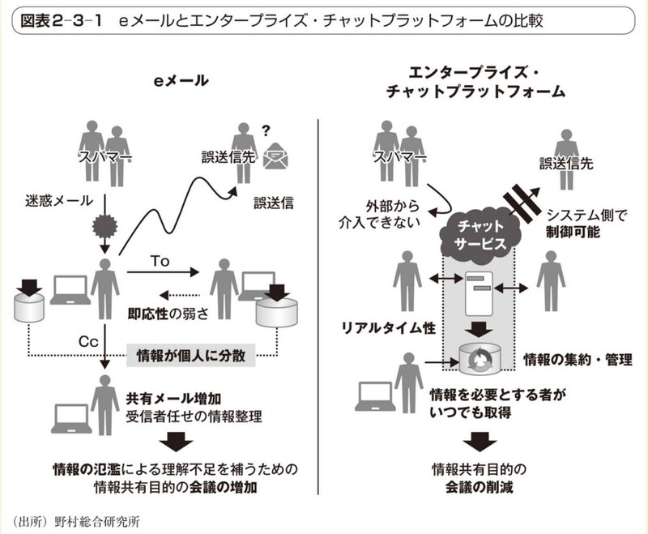
- なぜ今、エンタープライズ・チャットプラットフォームが注目されるのか
- 図表2-3-2 主な企業向けチャットサービスの変遷
- 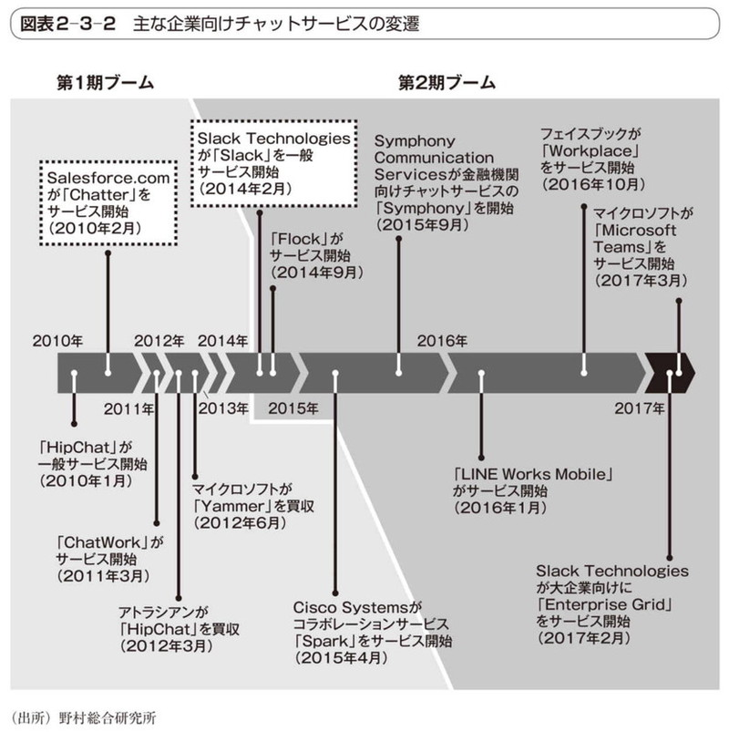
- 図表2-3-3 第1期と第2期ブームの違い
- 主要ベンダーの動向
- その他の特徴あるサービス
- ①事例
- ソフトウェア企業での生産性向上を狙った導入
- 図表2-3-8 従来のソフトウェア開発とChatOpsの違い
- メディア企業でのCMS（コンテンツ）としての活用
- 図表2-3-9 メディア企業でのエンタープライズ・チャットプラットフォームの活用
- ②関連技術の紹介
- 検索のパーソナライズ
- iPaaS（ Integration Platform as a Service）
- エンタープライズ・チャットプラットフォームを外部から支える重要な技術が「iPaaS」である。
- 図表2-3-10 iPaaSによる高度なサービス連携のイメージ
- 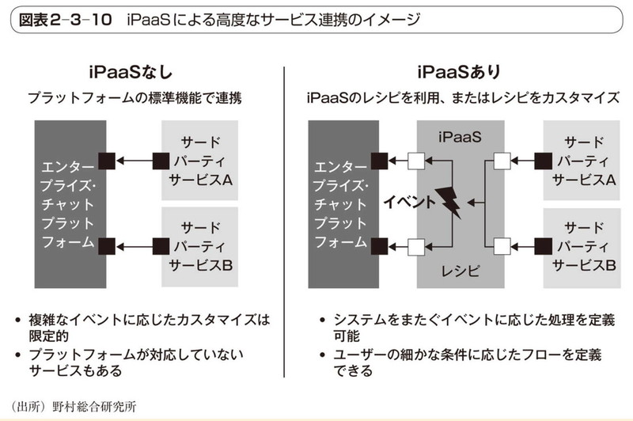
- 一般に、IFTTT(if this then that)と呼ばれるレシピ（テンプレート）をカスタマイズすることでプロセスを定義できるようになっている
- IFTTT
- Microsoft Flow
- チャットボット
- 図表2-3-11 チャットボットによる業務システムのアバター化
- 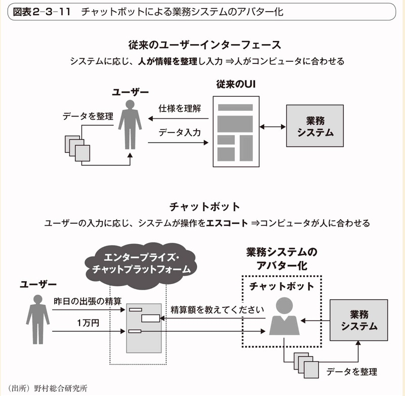
- ③ITロードマップ
- 図表2-2-12 エンタープライズ・チャットプラットフォームのロードマップ
- 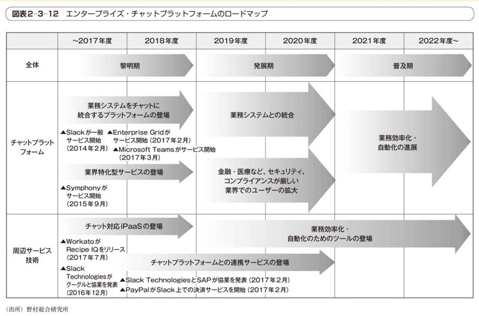
- 2017～2018年度：黎明期。ビジネスプラットフォームを目指すサービスが登場
- 2019～2020年度：発展期。業務システムとの統合が進む
- 2021年度以降：普及期。ビジネスプラットフォームとして普及
- ④実現に向けた課題
- 2.4 VR(Virtual Reality)・AR(Augmented Reality)
- ①事例
- ②関連技術の紹介
- ③ロードマップ
- 図表2-4-6 VR・ARのロードマップ
- 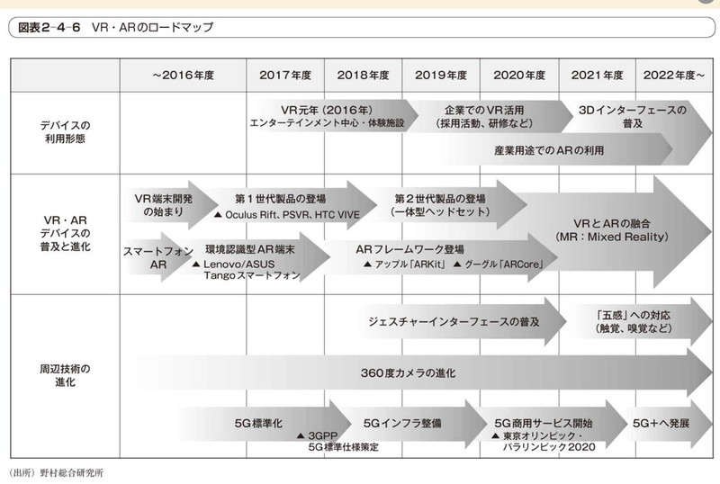
- 2018～2019年度：第1世代VRヘッドセットの値下がりと一体型ヘッドセットの登場
- 2020～2021年度：5Gの商用化によってVR・ARサービスが高度化
- 2022年以降：VR・ARの融合とMR(Mixed Reality：複合現実)の実現
- MRは、「仮想空間を主」として、現実社会の情報を反映させる技術
- ④5年後の利用イメージ
- ⑤実現に向けた課題
- 【コラム】人間拡張（Augmented Human）
- 図表1 人間拡張における4つの能力拡張と関連技術
- 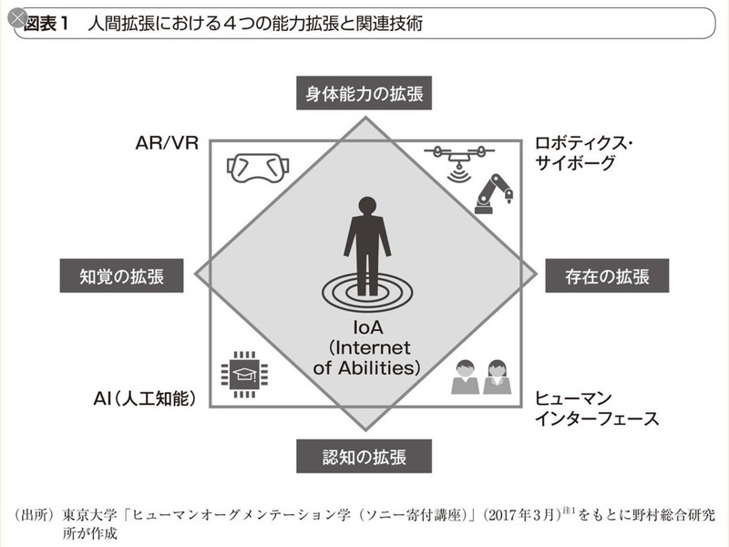
- 第3章 複合的なITの活用による新サービスの可能性
- 3.3 マーケティング×AI
- ①事例
- ②関連技術の紹介
- 認識：自然言語処理
- 認識：画像認識
- 行動：自然言語生成
- 学習：機械学習
- 学習：強化学習
- ③ITロードマップ
- 図表3-3-11 マーケティング×AIのロードマップ
- 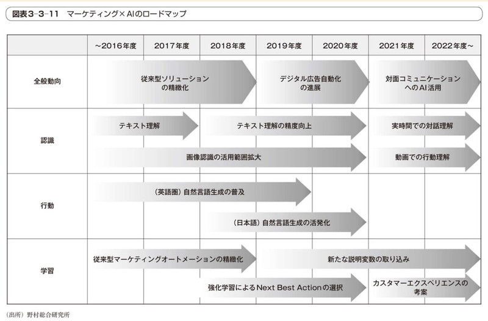
- ④実現に向けた課題
- AIに対する期待と誤解
- 学習データの蓄積
- 人とAIの棲み分け
- 【コラム】働き方改革とテクノロジー
- 1．企業による働き方改革への取り組みの背景
- 2．効率化と従業員を守るためのIT
- 図表2 働き方改革のために提供されているITソリューション
- 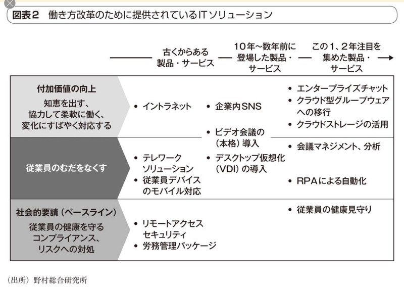
- 3．生産性向上のための「デジタル・ワークプレイス」
- 効率の追求から生産性の向上へ
- デジタル化時代に即した職場環境＝デジタル・ワークプレイスの必要性
- デジタル・ワークプレイスとは、デジタル化時代のデバイスやテクノロジーを駆使して、働くプロセスや場所・コミュニケーション、コラボレーションのあり方を新たに組み立てようとする考え方
- 図表4 デジタル・ワークプレイスの全体像
- 業務の最適化の視点：「業務の一貫した流れ」とは何か
- 業務の最適化を図り、アプトプットの両・質の向上やビジネスを迅速に進めていくためには、一般して業務をつなげていくという考えかtくぁでそれぞれの要素を連携させていく必要がある
- 図表5 API連携による仕事の一貫した流れの実現イメージ
- 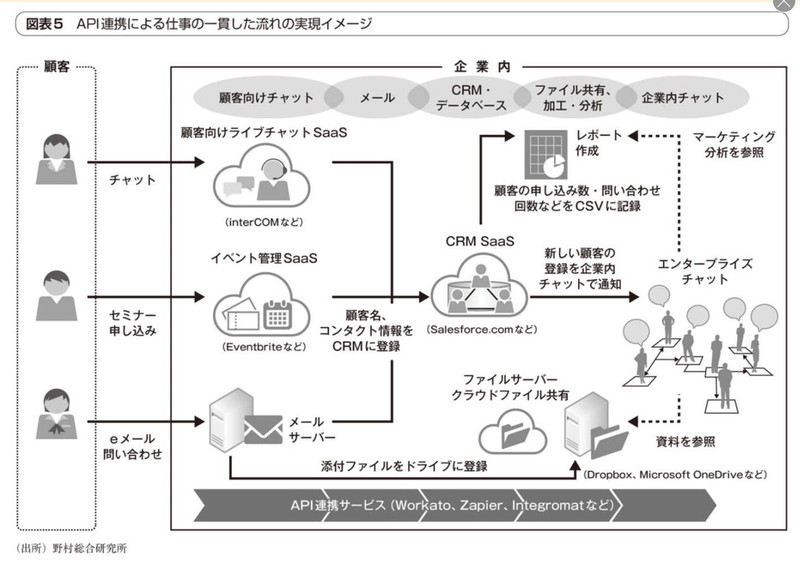
- システムの最適化の視点：従業員エクスペリエンスを向上するシステムの連携
- 従業員にとって、いつでもどこでも柔軟な働き方ができるインフラやアプリケーションが一貫して提供されることで、仕事をする上での利便性やユーザビリティが向上する
- AIが人間をアシストする「インテリジェント・ワークプレイス」に向かう
- これまでの業務の流れとIT提供のあり方を見直すことで、企業全体としてより高い生産性を目指す仕組みを工夫・構築するものである
- AIが従業員の能力を補い、人間が気づかない部分をコンピュータがアシストすることが可能になりつつある
- 図表6 働き方改革×テクノロジーのステップ
- 第4章 ビジネスを加速させるセキュリティ技術
- 別資料
- サービスの変革の時代の次世代図書館サービスは？
- 人工知能の進展は、ビッグデータをディープラーニングにより学習できるようになったことにより、第3次人工知能ブームが起き、様々な分野で実用化が進んできた。今の技術の延長線でも、コンピュータが人間の頭脳を上回るシンギュラリティ（技術的特異点）が2044年までに起きると言われている。また、突然変異的に技術が生み出された場合、もっと早く訪れる可能性もある。
- 電子図書館は、図書館界、出版界におけるデジタルフォーメーションであり、また、ナショナルアーカイブは、文化資源を保有する組織、その資源をデジタルアーカイブとして利活用できるようにするデジタルフォーメーションである。
- 「未来の図書館を作るとは」【2012年長尾先生】を読み返して
- 「未来の図書館」の概念
- 「未来の図書館を作るとは」（長尾真）より抜粋
- 「人間の持っている知識は頭脳の中にあり、種々の知識が何らかの関係性によってつながれていて、連想的に関係する知識が取りだされている」
- 「図書館においてもぼう大な書物の中に存在する知識が関連性をもって書物という単位を超えてつなげられ、それが取り出されることが大切であろう。」
- 「本のある部分に存在する単語や概念を集め、それらに近い単語や概念が存在する部分を他の本について網羅的に調べる」
- 関連する知識を人間頭脳の中のネットワークのようにつないで、利用者の要求に応じて提示できるような形の電子図書館の内容の組織化が望まれているのである。
- 電子図書館における図書・資料は部品に解体され、それぞれが種々の観点からリンク付けされた巨大なネットワーク構造が作られるようにする。これは1つの社会で共有する中立的な知識構造、知識システムである。
- 個人によって違った知識の構造の部分については、その人の力によって種々の検索方式を試み、自分の必要とする情報をとり出して中立的な知識の構造に付加してゆくことが出来ねばならないし、またそれによって自分に合った知識の構造を作りあげてゆくことができるだろう。
- 現実世界の本や情報の大切さ以上にヴァーチュアルな世界における情報処理と表現力の可能性にもっと大きな関心を持つべき時代に来ていると言えるのではないだろうか。
- 「電子図書館」（1994年長尾真著）では、
- 「既存の図書や資料をデジタル化すればそれで電子図書館が実現するかといえばそうではない。あるべき姿はデジタル化された情報を縦横に使いこなし、まったく新しい知的空間を創造するための図書館である。」
- とされており、「Ariadne」はその理念に基づいた実用化実証実験システムである。
- 「未来の図書館を作るには」が発行された2012年初めは、
- まだ第3次人工知能（AI）ブームの前で、AIはまだブレークスルーしていなかった。
- しかし、2012年以降のAIにおける機械学習はディープラーニング手法等により飛躍的に進展し、また、アーカイブ機関での資料のデジタル化、デジタルコンテンツのオープンデータ化、LOD化の加速化により、AIが扱える質の高いビッグデータが揃いつつある状況で、
- 「未来の図書館を作るには」の中で「未来」と示唆されていた相当な範囲の仕組みが、今後5年程度で実用化を見通せるようになった。
- そこで、2017年時点での第4次産業革命等の動向を踏まえて、「未来の図書館を作るには」で示唆された提言の実現性について考察したい。
- AI等の新技術の活用の可能性は？
- 図書館等のアーカイブ機関のサービスに関連しそうな新技術要素として、AI、ロボット、IoT、クラウド、テレワーク、マーケティングオートメーション、Web接客ツール、チャットボット等がある。
- 関係機関ではそれらを活用したサービスがAPIを介して利用可能になっている。それらをマッシュアップする形で活用すれば、自社だけでは開発できないような最新のサービスも、低価格で利用可能になる。
- AI機能に関しても同様で、最適なアルゴリズムを自ら作り上げなくても、既成のアルゴリズムを選択して、自力で機械学習の実験、実用化が可能になり、プログラミング技術を持たなくても、機械学習を活用できる時代になった。
- 従来から、今でいうAIでなくとも、情報処理の進展に伴って、人に代わって、システムによりサービスを提供してきた。10年先の新技術はわからないが、今確立しつつある技術は、明らかに実用レベルになる。
- 今後10年で広く普及すると思われる次世代技術を活用することにより、様々な情報のビッグデータ化が進み、図書館としてのデジタルアーカイブが、国としてのデジタルアーカイブとして、業種業態を問わない機関が保有する情報、関連情報を合わせて、ビッグデータ化され、更に発展するAIを利活用したサービスが展開されていく。
- 知的情報資源のビッグデータとしての活用の可能性は？
- 図書館等のアーカイブ機関は、従来から専門員の知識・ノウハウにより統制され形式知化してきた情報を保有している。
- 二次情報としてのメタデータ、書誌情報、情報を見つけ出すための情報としてのレファレンス情報（参考情報）、Q&A、調べ方案内情報等は、既にビッグデータとして活用できる状況であるが、一次情報としてイメージデータ化されたデジタルコンテンツの内容本文は、検索にはほとんど利用されていない。
- 今後、ビッグデータとして活用が期待される情報として、アーカイブ機関のデジタルアーカイブ内で保有している一次情報があり、オープンデータ化されていない情報も含めて、全文テキストを活用した検索インデックスの作成をはじめ、AIの学習データとして活用するサービスが認められる方向である。
%20【ゼミ資料xmind】.html_files//icons/full-1.png) Bib40-05 「知の共有化」の実現を目指した構想【2013年】
Bib40-05 「知の共有化」の実現を目指した構想【2013年】- 「知の共有化」とは
- アーカイブ機関に限らず、あらゆる組織、個人がデジタル化した情報を共通的に保存し利活用できるようにする基盤を「デジタル知識基盤」といい、「デジタル知識基盤」により、新たな知識を創造し還流することを「知の共有化」として記述する。
- 「未来の図書館を作るとは」と「知の共有化」
- Web2.0時代と言われた頃、図書館界ではOpac2.0と称するサービスで、いわゆるAIとまでは言えないが、AIを指向した組織化、検索サービス等の実現を目指してきた。
- 既にインターネット上に広範な情報が公開されているが、ここ数年で、文化機関、公的機関が保有している情報もオープンデータ化が進みつつあり、ビッグデータとして利活用できる方向に向かっている。
- このような時代に、従来の業務やサービスは、AIが組み込まれたシステムやロボットに支援されてサービスが省力化され、さらにビッグデータとして網羅性が確保されることにより、「知の共有化」が可能な新たなサービスが生まれようとしている。
- 「未来の図書館を作るとは」（長尾真）より抜粋
- 知識インフラ構築における最も大切な概念は、情報を集め、これを知識化し活用することによって新しい情報・知識を創出し、知識インフラに加えるという形で循環的にこのシステムを強化・拡大してゆくことによって社会・経済に貢献することである。
- 知識が種々の観点から組織化、構造化されて利用しやすい形で蓄積されて利用に供される
- 図書館の視点で見れば、専門家によって作成されてきた、書誌、辞書、典拠（シソーラス）類に加えて、著作物のイメージ画像、全文フルテキスト、目次、索引、あらすじ、書評等、出版界や図書館界で従来から形式知化してきた情報を、信頼性の高いビッグデータとして利用可能にし、AIの教師用データとして投入・学習することにより、
- 長尾先生が1994年に提唱した「電子図書館」が、信頼性の高い知識を豊富に持った「AI化されたデジタル知識基盤」として実現することになる。
- アーカイブに関連した国の活動の方向性
- 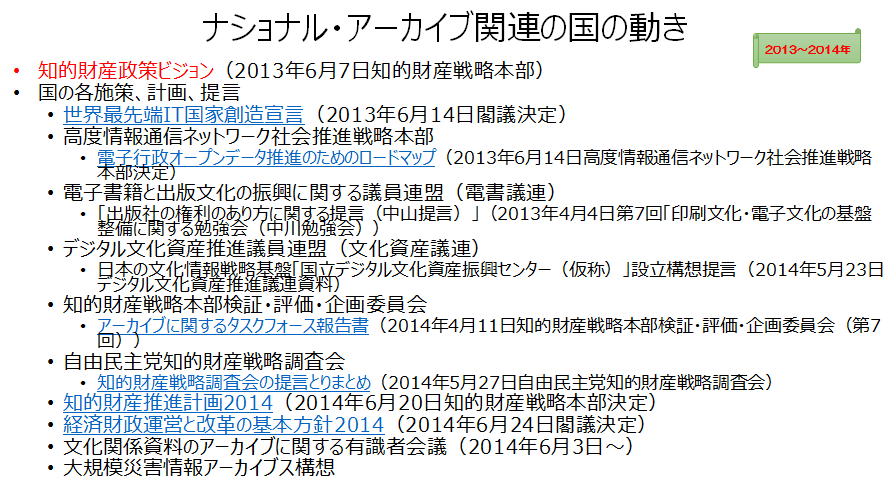
- 国は、「知的財産政策ビジョン」（2013年6月7日知的財産戦略本部決定）に基づく国の施策の中で、図書館に直接関連する計画として、電子書籍化と利活用の促進に関する構想（電子書籍と出版文化の振興に関する議員連盟）、デジタル文化資産の保存・活用の基盤の整備に関する構想（デジタル文化資産推進議員連盟）、2020年までの6年間の文化芸術分野での振興に関する基本的な方針（文化庁）、学術情報の公開と共有の拡充に関する計画（文部科学省）、大規模災害の記録と記憶の保存などのアーカイブの構築等を検討している。
- 個々の施策の目的は異なっていても、対象とする文化的資産は相互に関連するものであり、知識インフラを目指した仕組みとして、国全体で文化関係資料の価値を高め、新たな文化や情報を生み出す社会基盤として、「恒久保存・継承・公開・活用」が可能なナショナルアーカイブとなることが望まれる。「資料・情報を文化資産として収集・保存する」ということは、従来からの出版物に相当する情報の範囲ではなく、美術館、博物館、文書館等が保有する無形・有形の文化財をデジタル化した情報を含め、インターネット上で流通している著作物全てを文化資産としてアーカイブすることであると筆者は考える。
- 文化財のナショナルアーカイブの構築と運用に関しては、様々な機関において、必要性の認識の共有やアーカイブ立国宣言の提案17)、制度的な課題解決のために、アーカイブ基本法の法制化、推進体制作りなどが議論されている。また、具体的なサービスシステムの仕組みとして、技術的課題解決のための研究開発も進んでいる。
- 恒久的保存基盤の部分は、文献も含めて、すべての文化財、災害情報が相互に関連付けられて蓄積されている。恒久的保存基盤を活用して新たな知識創造活動が行われ、知識創造活動の成果を、様々な目的に応じて利活用されていくことを想定する。
- 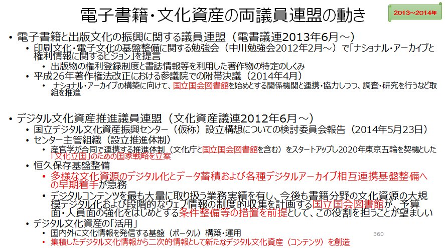
- 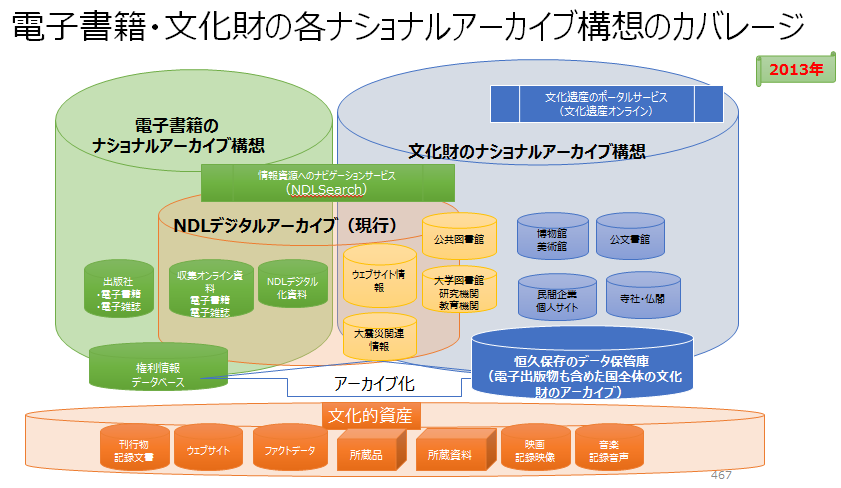
- 電子書籍分野のナショナルアーカイブ
- 電子書籍分野のアーカイブの役割
- 長尾前館長により、2008年に提案され、改めて2015年3月に示された電子出版物流通に関する「長尾モデル」として提案されたモデルと類似したプラットフォームである。
- 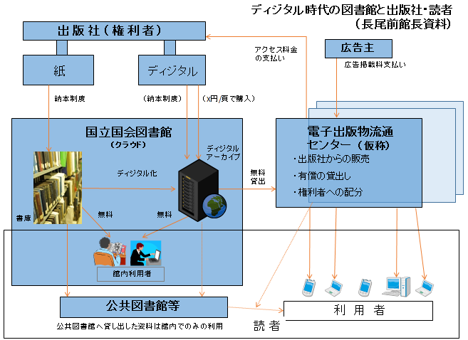
- 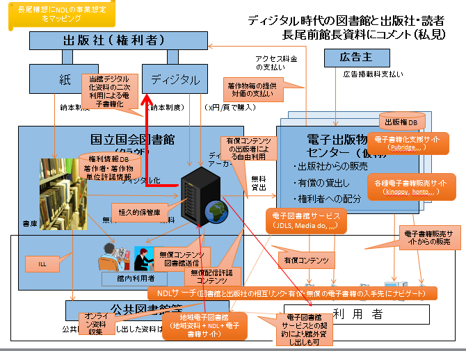
- 提供用の商用コンテンツは、電子書籍サイトが保持し提供する。
- NDLは、DRMによるアクセス制限が掛かっていないコンテンツを収集し、ダークアーカイブとして恒久的保存の役割を担い、電子書籍サイトがコンテンツを保持できない、もしくはサービスを継続できない場合、NDLの恒久保存用アーカイブを利用して電子書籍サイトから提供する。
- また、NDLが原資料保存のために画像イメージでデジタル化したコンテンツを、出版界が二次利用して電子書籍化・プリントオンデマンド（POD）化し、電子書籍サイトから提供することにより、いわゆる絶版本の電子書籍化を促進する。
- さらに出版物・著作権者の情報は、出版界・図書館界の共通のデータベースとして維持・更新し、相互に利活用することも想定したモデルである。
- 電子書籍分野のアーカイブの機能モデル
- 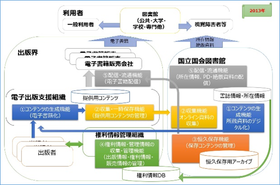
- 電子書籍に関するナショナルアーカイブは、コンテンツの生成機能、収集・一時保管機能、保存機能、権利情報・管理情報の収集・管理機能、配信・流通機能の5つの機能を想定する
- コンテンツの創出から収集・保存、配信・流通に至る全体の流れを一元的に集約するため、恒久保存のアーカイブと共に、ナショナルアーカイブ全体のメタデータを集約するデータベースにおいては、多様な主体が多様なデータを扱えるよう、柔軟かつ多層的なデータ構造を実現する。
- 具体的には、著作物・著作者・出版者等の書誌情報、販売データ・販売者・所蔵機関等の所蔵情報、目次・索引・シソーラス等の情報探索情報等の多様なデータを一元的に管理可能な仕組みとすることを想定した。
- 文化情報資源のナショナルアーカイブ
- 「未来の図書館を作るとは」（長尾真）より抜粋
- 【長尾先生】図書館は、書物等の情報資源を収集・保存し提供する場であるとともに、それらを使って関心のある人が集まって議論し新しい知識を創造する場
- 【長尾先生】日本としてのナショナルアーカイブは、日本中に存在する知識情報が有機的に結合され、日本中の人が自由に使える日本の「知識インフラ」
- はじめに
- 各種デジタルアーカイブ構築施策の一元化
- 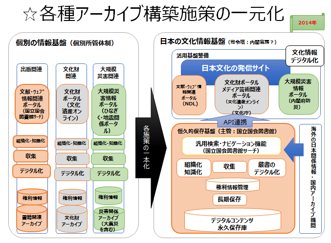
- あらゆる分野、業種業態を越えた情報資源を一元的に利用できるアーカイブ
- 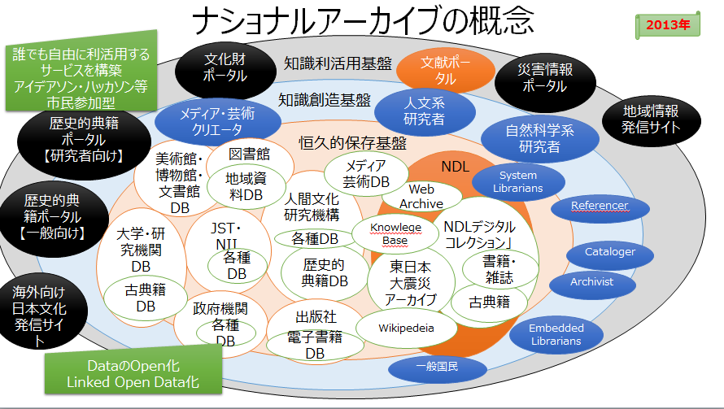
- 文化財を含めたナショナルアーカイブの機能イメージ
- 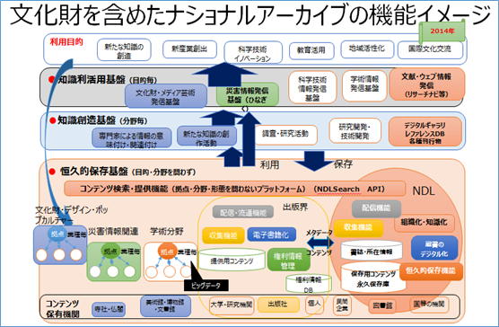
- 「文化財を含めたナショナルアーカイブの機能イメージ」は、2012～2014年に描いた図である。
- 我が国の多様な文化を知識として保存・継承する役割、様々な分野の専門家が参加し、新たな文化を知識として創造していくための社会的な基盤としての役割、それらの知識を利用目的に応じて発信する役割、そして、これらの仕組みを統括し運用していく役割が考えられ、文化的資産を館種毎に集約している拠点と、新たな知識を創造し発信している拠点等が分担して構築・運用していくことを想定した。
- 恒久的保存基盤（あらゆる情報の恒久的保存）
- 恒久保存と利活用のための共通プラットフォームで、１つの機関にすべてを集約するのではなく、各分野のアーカイブを集約する拠点が中核となって分散アーカイブを構築する。
- あたかも１つのアーカイブとして見えるように、個々の情報同士を意味的に関連付け、検索で情報を取り出すだけでなく、取り出された情報から芋づる式に関連する情報を取り出せるようにする。
- 分野での情報の網羅性・完全性が重要であり、また異分野の情報との関連付けにより、AIとしての知識として活用できる。
- 知識創造基盤（新たな知識創造活動の場）
- キュレーター、ライブラリアン等の支援のもとで、それぞれの分野の専門家のみならず、広く国民も含めて、情報に付加価値を付けたり、他の分野の情報と関連付けて、二次的著作物を創造する場として想定した。
- 知識創造支援機能
- 情報全体の基本情報としてのメタデータを付与する活動、記事、章節項、文節等の単位で組織化・構造化する活動、情報間を意味的に関連付けるための基本情報として、用語辞書、典拠、シソーラス辞書等を作成する活動である。
- 辞書類作成
- 辞書類の作成において、コーパスは、AIの支援により省力化が進むと思われる。
- 件名典拠、シソーラスは、
- 本文フルテキストもAIへの入力データとして特徴量を抽出することにより、書誌データのみならず、本文テキストから標目を抽出することが可能になり、
- また、コーパスを利用することにより、同義語、上位語、下位語、関連語、分類記号の関係づけをすることも可能になると思われる。
- 固有名典拠は、
- 既に刊行されている書籍の著者に関して、AIを利用して、著作名、著者、出版年、NDC分類等の特徴量を抽出・分析することにより、著者の自動同定の精度は相当向上すると思われる。
- AIにより、省力化、自動化ができることにより、書籍だけでなく雑誌記事等も含めて、固有名典拠の自動作成が可能になる。
- NDC分類は、
- 件名典拠をベースにした分類の番号体系は、人間の判断によるところが大きいので、容易にAI化することは困難と思われるが、分類を番号体系でなく意味的なシソーラス体系として維持し、改訂していく作業は、AIにより体系を整理することは可能になる。また番号体系の版毎の対比表の維持も人手を介さずに行えるようになると思われる。
- ただ、配架のための分類という考え方、資料検索のための分類体系は、全文検索を含めて様々なレベルでの検索が容易になってくる状況において、役割を問い直す必要があるのではないか。
- 情報を関連付けるための情報
- 共通語彙
- 分野を超えた情報交換を行うには、個々の単語について、表記・意味・データ構造を統一し、互いに意味が通じるようにすることが必要であり、AIの知識として蓄積する場合、共通語彙になっていることが学習の効率を高められる。
- コーパス、オントロジー、分野別シソーラス、各種用語辞書、DBPedia等
- それらが、永続的識別子となって、Linked Data化されていると、より精度の高い関連付けが可能になる。
- IMI：情報共有基盤への参画
- データに用いる文字や用語を共通化し、情報の共有や活用を円滑に行うための基盤であるIMI(Infrastructure for Multilayer Interoperability:情報共有基盤)の構築への参画、連携が重要である。
- 情報に関する情報の組織化
- 情報の組織化は、二次情報としての書誌、メタデータの作成があるが、新しい著作物に対するNDC分類、件名などは、既存の書誌、典拠を教師データとして蓄積することにより、AIによりかなりの精度の自動付与が可能になる。
- 専門家は、AIによる精度に応じてチェック、補正することが役割になるのではないか。また、雑誌記事に関しても、記事を著作単位とした書誌作成がAIにより省力化して付与が可能になる。
- 「未来の図書館を作るとは」（長尾真）より抜粋
- 図書・資料は部品に解体され、それぞれが種々の観点からリンク付けされた巨大なネットワーク構造が作られるようにする
- 目次情報を付けたり、本の表紙の画像や数行の簡単な要旨を付ける
- 動画・静止画・音声は、画像認識機能により自動タグ付け
- 検索システム
- 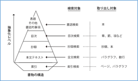
- 書籍の構造化
- 知識創造活動
- 新たな知識を創造する活動は、図書館等のアーカイブ機関の主たる目的の一つであり、デジタル知識基盤の中で、恒久的保存基盤に格納された網羅的な情報を活用して新たな知識を創作する活動である。
- 歴史的な文化財や現代文化を映像化、画像化、テキスト化する活動、構造化された情報に解題情報等を付与する活動、情報間を意味的に関連付ける活動、テーマを設定してデジタルギャラリを構築する活動等も創造活動の一つと位置づけられる。
- 創造活動が、効率的に行えることにより、質、量ともに多くの知識が再生産され、創造された知識は、恒久的保存基盤でアーカイブされることを想定した。
- 「未来の図書館を作るとは」（長尾真）より抜粋
- 従来の書誌情報の考え方をマルチメディア情報に対応できるように拡張かつ詳細化するとともに、対象資料に関係する様々な種類の情報にリンクをはり、それらの情報をたどってゆけるようにする
- 既存の知識から自分の必要とする部分を切り出して、新たな発想の著作を創造し、新たな知識とする
- 新たな知識創造の場としての図書館
- 図書館等の機関は、自館が保有している資料に加えて、「デジタル知識基盤」で共有されている知識を組合わせて提供し、知識創造の場として、施設としての実空間と、インターネットを利用した仮想空間が、相互にシームレスに、「場」として利用できるものを想定する。
- 情報を媒介して専門家と専門家を繋ぐこと、様々な組織が持つ情報が関連付けられて、それぞれの組織を中心に活動していた人が繋がっていくこと、専門家を媒介して辞書と辞書を繋ぐことを可能にして、様々な分野の人たちが保有する知識が有機的に関連付けられ、それを活用して、更に利用者同士がつながっていく「場」としての機能を期待する。
- 「未来の図書館を作るとは」（長尾真）より抜粋
- 議論の場の提供という図書館機能
- 解決したいという人達と研究者、そして図書館司書のグループが種々の角度から資料をもとに議論
- 考え方の違う人達が知識を共有し、その違いを議論を通じて明らかにすると共に、新しい知識・思想を作り出してゆく場
- 出版社、著者と読者をつなぐ場としての図書館
- 図書館が司書による相談サービス、あるいは自動的な案内サービスをする場合でも、自分の電子書棚を作りたいという人の多くは図書館から借りるのではなく出版社のデータベースの方に行き、書物を購入することになるわけで、図書館は出版社と読者を結合する接続業者のようになってゆく
- レファレンスサービス
- 利用者からの問い合わせに対して、AIを利用して、必要とする内容に最もマッチングする資料名、所在場所へナビゲーションする。資料がオープンデータであれば、参考となる内容の記載部分を列挙し、さらに答えとしての事実まで提示が可能になる。
- 自然言語処理機能を利用することにより、音声での自然言語の問いに対して、「デジタル知識基盤」を知識としたAIが、解の候補を抽出し、それを音声での自然言語で回答することが可能になる。
- 「未来の図書館を作るとは」（長尾真）より抜粋
- 司書の世話にならなくてもある程度のレファレンスサービスが受けられるように
- 自然言語による質問要求を受け付けて、取り出したものがその要求に対応するものであるかどうかを自然言語処理技術によって調べ、できるだけ質問要求に近いものだけを選択する
- 事実に基づいた報告書
- 依頼または予測調査に関しては、AIを利用した文献の意味的内容検索により、最もマッチングする資料名、資材場所を探し出し、その資料がオープンデータ化されていた場合は、記述された内容を洗い出し、内容を要約して報告書の原案を作成することも数年で実用可能と思われる。
- 知識利活用基盤（情報発信）
- 恒久的保存基盤に格納された一次情報、コンテンツ創造基盤で創出された二次的情報が、デジタル知識基盤の中でAIの機能を活用して有機的にネットワーク化され、あらゆる分野で利活用できるようにする。
- 見るだけのアーカイブ」から「使い、創り、繋がり、伝えるアーカイブ」として、広く国民による新たな知識の創造、新産業の創出、地域活性化、防災・減災、教育活用、教養・娯楽、観光、国際文化交流等、様々な利用者毎の目的に応じて、恒久的保存基盤に格納された一次情報、コンテンツ創造基盤で創出された二次的情報を有機的に組み合わせて、利用できるようにする。
- 知識検索機能として、網羅的な情報から、利用目的に応じてあらかじめ適切に絞り込み、利用者の属性、スキル、利用場所に応じて、様々な画面インターフェースを用意して、利用者が必要とする情報、参考となる関連する情報を容易に得られるようにする。
- 「未来の図書館を作るとは」（長尾真）より抜粋
- 電子図書館になって取り出す単位が書籍の単位ではなく、書籍の中の章や節、パラグラフ、あるいはこんな内容が書かれている部分のみ
- 自動的な形で適切な知識の所在にまでナビゲートしてゆくシステム
- その本のどこに書かれているかを探すというのではなく、自分の欲しい情報そのものが出てくることになる。
- 書誌検索のような単純、単一の検索でなく、種々の検索のモードを提供する
- 種々のあいまいさを許すあいまい検索の工夫
- 自分の知識の外部記憶装置
- 「未来の図書館を作るとは」（長尾真）より抜粋
- 個人によって違った知識の構造の部分については、その人の力によって種々の検索方式を試み、自分の必要とする情報をとり出して中立的な知識の構造に付加してゆくことが出来ねばならないし、またそれによって自分に合った知識の構造を作りあげてゆく
- 自分の書棚を電子的に作れば、自分の連想に基づいて自分の本や本の部分部分をリンク付けして自分の知識の構造に合った自分図書館を作って楽しむことができる
- 現在のAIの技術で、デジタル知識基盤にある共通的な知識から個人のスキル・嗜好に合わせてパーソナライズするとともに、個人が保有する知識を組み合わせて、自分専用のインテリジェンスは外部記憶装置を持つことが可能になる。
- スマートフォン等からこの外部記憶装置にアクセスして、
- ①可能な限り「事実情報」を提供する、出来ない場合は、
- ②参考になりそうな文献候補を提示する、
- ③その文献候補の所蔵先へ案内する。
- ④デジタル化された情報があれば、閲覧サービスまでナビゲート、
- ⑤デジタル化された情報がなければ、入手可能なサービスへナビゲートという仕組みは、
- もう実現可能な段階になっている。
- 運用基盤
- データ保存課題、人材不足問題、資金不足問題、権利処理コスト問題など、デジタルアーカイブの活性化を阻害する課題を制度的に克服する方策(人材育成策・予算措置・権利処理に関する法改正など)を導き出し、解決を図っていく中核的な役割を担う推進母体(司令塔)としての組織・体制も必要である。
- この基盤では、ナショナルアーカイブ全体の戦略企画、デジタル情報の保存や利活用のための調査研究、研究開発、デジタル化支援、アーカイブに所蔵された資料に関する知識、読解力とIT技術の知識等も備えた高度な専門的人材の育成、孤児著作物の権利処理や、絶版作品のデジタルアーカイブ化における所有権、肖像権問題も含めた権利情報DBの構築を促進する等の役割を持つことを想定する。
- Bib40-06 「知の共有化」システムの標準的な構築プロセスと必要なスキル・知識
- Bib40-06-1 「知の共有化」システムの標準的な構築プロセス
- 現在の公共図書館等のシステム構成イメージ
- 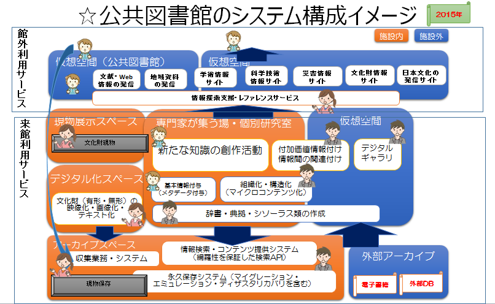
- 概要
- サービスの高度化のために、システム構築・運用に当たっては、次世代技術を活用することが望ましい
- AIと人間の能力と役割の一般論として、AIが実用段階に達した今、今まで人が担ってきた部分の作業も、精密化するとAIを活用したほうが効率的なことが多々ある。
- システム構築・運用に当たっては、必要なスキル・知識を持った人材の確保が必要である
- アーカイブ機関において、システムの調達・構築・運用のスキル・知識を持った人材が不足しているのが現状
- サブトピック 4
- 構築のタスクに必要なスキル・知識を選択的に習得することが効果的である
- 参考例の１つとして「iコンピテンシ・ディクショナリ」
- 適正な調達を行うために、開発タスクとドキュメントをひな形に進めることが効果的である。
- 参考例の１つとして「政府機関での調達の標準ガイドライン」
- その前提となっているシステム開発標準が「共通フレームワーク」
- システム開発標準としての「共通フレーム2013」
- 共通フレームとは
- ソフトウェアの構想から開発、運用、保守、廃棄に至るまでのライフサイクルを通じて必要な作業項目、役割等を包括的に規定した共通の枠組み。
- 何を実施するべきかが記述されている、「ＩＴシステム開発の作業規定」である。
- 目的は、ソフトウェア開発に関係する人々（利害関係者）が、「同じ言葉で話す」ことが出来るようにするため。
- ウォーターフォール、スパイラル、プロトタイプ、アジャイル系すべての開発方法論に共通したもの。
- 共通フレームの特徴
- （１）超上流の重視
- （２）モジュール性の採用
- （３）責任の明確化
- （４）責任範囲の明確化
- （５）工程、時間からの独立性
- （６）開発モデル、技法、ツールからの独立性
- （７）ソフトウェアを中心としたシステム関連作業までを包含
- （８）システムライフサイクルプロセスとの整合性
- （９）文書の種類、書式を規定しない
- （１０）修整（テーラリング）の採用
- 共通フレームのプロセス体系
- 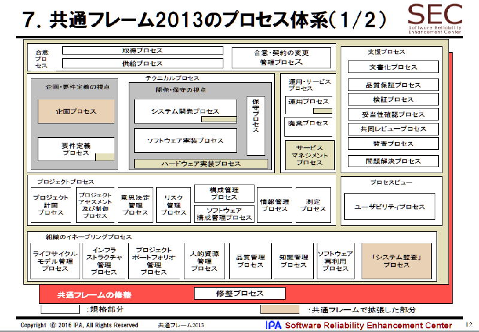
- 「要件」の4階層
- 共通フレームに含まれている主な考え方
- （１）「利害関係者の役割と責任分担の明確化」を提唱
- 事業要件、業務要件、システム要件を定義できるのは、それぞれ経営層、業務部門、情報システム部門である。
- それぞれが責任をもって自らの役割を果たすことで、要件を適切に定義できる。
- （２）「多段階の見積り方式」を提唱
- わずかな情報で見積ること自体、リスクが高い。それ故、それだけで、プロジェクトの目標としてはならない。
- （３）「Ｖ字モデルの採用」を提唱
- 設計（品質の埋め込みプロセス）とテスト（品質の検証プロセス）とを対応させることにより、プロダクト品質を確保する。
- （４） 「超上流における準委任契約の採用」を提唱
- 超上流は、基本的には、ユーザ責任であるため、ベンダにとって準委任契約とするのが合理的である。（もし請負契約にすると、ユーザの事情に大きく影響されるため、リスクが大きい）。
- 【例】
- ・超上流→ 準委任ならば運用テスト→ 準委任に
- ・ソフトウェア開発→ 請負
- （５） 「要件の合意及び変更ルールの事前確立」を提唱
- ソフトウェア開発においては、時の経過に伴って「要件は変わるもの」であり、ユーザとベンダとが事前にルールを策定し合意（確定）しておかないと、いざトラブルが発生した時に、速やかな対応が取れない。
- （６）「非機能要件の重要性を認識すること」を提唱
- ●機能要件とは
- システムに実装する機能に関する要件のこと。
- ●非機能要件とは
- 運用要件、移行要件、性能要件、セキュリティ、機密情報保護対策など、機能要件以外の要件のこと。
- 運用テストの段階に至って、問題をもたらす要因は、機能要件のみならず、むしろ深刻な事態になりがちな非機能要件の方であるため、早い段階で「非機能要件の重要性」を認識し、何かしらの対応策を講じることが望ましい。
- （７） 「運用・保守を含めたSLCPを考えること」を提唱
- システムは生きもの。作って終わりではない。顧客との取引が継続する限り、または事業や業務が続く限り（ITシステムを必要とする限り）、システムライフサイクル全般に目配せしてシステム化計画（企画）や要件定義を行うことが、結局は、適正コストで「使えるシステム」を実現できる。
- （８）V&Vの適用場面の解説
- （９）ソフトウェア保守規格の関連情報を紹介
- （10）「４つの保守タイプ」を紹介
- 【①是正保守（corrective maintenance）】
- ソフトウェア製品の引渡し後に発見された問題を訂正するために行う受身の修正（reactive maintenance）。
- （注記）この修正によって，要求事項を満たすようにソフトウェア製品を修復する。なお，是正保守の一部として，是正保守実施までシステム運用を確保するための，計画外で一時的な修正として，「緊急保守（emergency maintenance）」がある。
- 【②予防保守（preventive maintenance）】
- 引渡し後のソフトウェア製品の潜在的な障害が運用障害になる前に発見し，是正を行うための修正。
- 「引渡し後のソフトウェア製品の潜在的な障害が，故障として現れる前に，検出し訂正するための修正。」と定義している。
- 【③適応保守（adaptive maintenance）】
- 引渡し後，変化した又は変化している環境において，ソフトウェア製品を使用できるように保ち続けるために実施するソフトウェア製品の修正。
- （注記）適応保守は，必須運用ソフトウェア製品の運用環境変化に順応するために必要な改良を提供する。これらの変更は，環境の変化に歩調を合わせて実施する必要がある。例えば，オペレーティングシステムの更新が必要になったとき，新オペレーティングシステムに適応するためには，幾つかの変更が必要かもしれない。これは，アプリケーションの全体機能要件は変わらないにも関わらず，オペレーティングシステムやミドルウェアの変更，ハードウェアの変更，法改正などに伴ってアプリケーションソフトウェアに影響する部分の改良が必要になるようなケースである。
- 【④完全化保守（perfective maintenance）】
- 引渡し後のソフトウェア製品の性能又は保守性を改善するための修正(1)。
- (1) この定義は，ISO/IEC 14764:1999 （JIS X 0161:2002）から引用している。ISO/IEC 14764:2006 （JIS X 0161:2008）においては，完全化保守と予防保守の定義が類似した表現となっているため，読者が混乱しないよう，あえて旧規格の定義を掲載した。
- （注記）完全化保守は，利用者のための改良（改善），プログラム文書の改善を提供し，ソフトウェアの性能強化，保守性などのソフトウェア属性の改善に向けての再コーディングを提供する。業務の改善に伴う機能要件が変わるときに行う改良などを指す。
- 実務に活かすIT化の原理原則17ヶ条
- 原理原則１７ヶ条の構成
- 基本的な考え方：
- 原理原則を理解しやすくするため、原理原則の基になる考え方を説明したもの
- 行動規範：
- 原理原則の基づいて、受注者・発注者のそれぞれが具体的にどのように行動すべきか示したもの
- 原理原則条項：
- 原理原則は「超上流」において必要とされる事柄を、格言のように短く表現したもの
- 原理原則【１】 ユーザとベンダの想いは相反する
- 原理原則【２】 取り決めは合意と承認によって成り立つ
- 原理原則【３】 プロジェクトの成否を左右する要件確定の先送りは厳禁である
- 原理原則【４】 ステークホルダ間の合意を得ないまま、次工程に入らない
- 原理原則【５】 多段階の見積りは双方のリスクを低減する
- 原理原則【６】 システム化実現の費用はソフトウェア開発だけではない
- 原理原則【７】 ライフサイクルコストを重視する
- 原理原則【８】 システム化方針・狙いの周知徹底が成功の鍵となる
- 原理原則【９】 要件定義は発注者の責任である
- 原理原則【10】 要件定義書はバイブルであり、事あらばここへ立ち返るもの
- 原理原則【11】 優れた要件定義書とはシステム開発を精緻にあらわしたもの
- 原理原則【12】 表現されない要件はシステムとして実現されない
- 原理原則【13】 数値化されない要件は人によって基準が異なる
- 原理原則【14】 「今と同じ」という要件定義はありえない
- 原理原則【15】 要件定義は「使える」業務システムを定義すること
- 原理原則【16】 機能要求は膨張する。コスト、納期が抑制する
- 原理原則【17】 要件定義は説明責任を伴う
- 原理原則【１】 ユーザとベンダの想いは相反する
- ITシステムの企画・開発の現場では、ユーザ企業とベンダ企業の相反する想いがあります。例えば、ユーザ企業は、要件はできるだけじっくり詰めたいし、予算は早期の投資判断を求められるので最終費用を早く確定してほしいとの想いがあります。他方のベンダ企業の想いはまったくその逆です。これがお互いにとってそもそもの不幸の始まりとなります
- 開発規模（工数）に見合った、最低限の工期を確保できなければ顧客満足を満たす開発はできません。受注者には開発規模に見合った工期を主張することが求められます。
- 原理原則【２】 取り決めは合意と承認によって成り立つ
- 証拠のない口約束のように、決まったと了解していることが、それ以降の都合で無責任に変更となり、残念な思いをする、ということはよくあります。
- 決め事は可能な限り文章に残し、承認ルール（主体と方法）の確認をして、信頼度を高めなければいけません。
- 承認は合意に基づいていることが必要です。
- 原理原則【３】 プロジェクトの成否を左右する要件確定の先送りは厳禁である
- 要件定義は開発全体の成否を左右重要な工程です。曖昧な要件のまま開発が始まると、プロジェクトが失敗するリスクが大きくなります。
- 特に、システムの出来を左右する要件に高いリスクを抱えたまま、プロジェクトを進めることは危険です。あせってベンダに開発を依頼しても、先に進めず、かえって時間・コストがムダになることもあります。
- 解決の目処が立つまでは、先に進まない勇気も必要です。
- 原理原則【４】 ステークホルダ間の合意を得ないまま、次工程に入らない
- プロジェクトを起こした業務企画担当者は、プロジェクト責任者として、これらステークホルダの方針、意見、課題などについて、漏れなく綿密に把捉し、できることとできないことをIT担当者、ベンダとともに切り分け、業務要件として取りまとめていく責任を果たす必要があります。
- ステークホルダもまた、システムの供給側に立つ場合は、積極的にシステム開発要件の策定に参加し、利用者ニーズを確実に把握して、正確にシステム機能に反映していくことが必要です。
- 原理原則【５】 多段階の見積りは双方のリスクを低減する
- 不確定要素が多い中での見積りをプロジェクトの目標値として設定すべきではありません。
- あいまいさがある段階の見積りを、はっきりした段階で見積り直せるルールづくりなどがプロジェクト成功の鍵となります。
- 要件の不確定さやプロジュクトの特性・リスクに応じて、適切な契約方式（多段階契約、インセンティブ付契約など）を選択することにより、発注者・受注者の双方にメリットが生まれます。多段階とは、受注先をその都度変えるということではなく、固まり具合に応じて見積り精度をあげていこうということです
- 原理原則【６】 システム化実現の費用はソフトウェア開発だけではない
- 見積り範囲がソフトウェア開発のことだけを指しているのか、インフラ整備（システム基盤整備）などのような付帯作業も対象にしているかなど、スコープを明確にしていくことが大切です。
- 発注者は、何をお願いし、何を自分で行うのか、一方、受注者は自分の提供する作業やサービスはどの範囲なのかをお互いに明確にしておくことが重要です。
- 原理原則【７】 ライフサイクルコストを重視する
- 開発コスト、運用・保守コストのバランスを考えなければなりません。大切なことはライフサイクルコストを意識することです。
- 例えば、運用性・保守性を高めるポイントとして以下があります。
- －メンテナンスフリー
- －拡張性の容易さ確保
- －モニタリング・トレーサビリティの確保
- －障害発生時の調査、リカバリーが容易な設計
- －OS・ハードウェアのバージョンアップ対応
- 原理原則【８】 システム化方針・狙いの周知徹底が成功の鍵となる
- 超上流のフェーズで、システム化の方針・狙いを浸透させておかないと、各人が勝手気ままに要件を考えるため、仕様の統一に時間がかかり、最初の構築だけでなく、その後の維持・保守においても費用と時間が増大することになります。
- システム化の目的はコンピュータやプログラムではなく、事業目標を達成するための情報システムの構築なのです。
- 原理原則【９】 要件定義は発注者の責任である
- 要件定義とは、どのようなシステム、何ができるシステムを作りたいのかを定義することです。それはあくまでも発注者の仕事であり、発注者の責任で行うものです。要件定義があいまいであったり、検討不足のまま、受注者に開発を依頼した場合、その結果として、コスト増、納期遅れ、品質低下を発生させるおそれがあります。その責任を受注者に負わせることはできません。
- 受注者が支援する場合であっても、要件定義で作成した成果物に対する責任は発注者にあります。
- 原理原則【10】 要件定義書はバイブルであり、事あらばここへ立ち返るもの
- ベンダ企業を含むステークホルダ間の合意のベースとなるのは常に要件定義書です。設計工程以降よりも、むしろ、要件定義の合意形成時点での吟味が重要です。「決定先送り型」の要件定義では、あいまいな海図に基づく航海のようなもので、早晩プロジェクトが破綻します。
- ステークホルダ間の合意は、名目的な合意ではなく、実質的な合意であることが不可欠です。
- 原理原則【11】 優れた要件定義書とはシステム開発を精緻にあらわしたもの
- 要件定義工程では、業務要件を整理・把握し、その実現のためのシステム機能要件をしっかり固めます。あわせて性能、信頼性、セキュリティ、移行・運用方法などの非機能要件、既存システム接続要件、プロジェクト特有の制約条件も洗い出します。また、将来の方針を見込んで稼働環境を定めることが大切です。流行に流されず、ルールを定めることです。
- 原理原則【12】 表現されない要件はシステムとして実現されない
- この原則は、建築における施工主と工事業者の関係にあるように、発注と受注における常識です。しかし、情報システム開発においては往々にしてこの原則が成立しない場合があり、「行間を読め」、「言わなくても常識」、「言った言わない」など表現されない要件が、両者のトラブルの原因になります。
- 原理原則【13】 数値化されない要件は人によって基準が異なる
- 要件定義では、定量化できるものは、極力、数値化します。数えられないものは定義できません。「大きい、小さい、速い」だけでは、人によって「ものさし」が異なります。
- 数値化されていても誤りはあります。例えば、使用する単位が違えば結果は大きく変わります。単位まで含めて確認し、決めなければなりません。
- 原理原則【14】 「今と同じ」という要件定義はありえない
- 「今と同じ」でも要件定義は必要です。
- そもそも同じでよいなら再構築する必要はありません。よくないから再構築するというところから発想したいものです。
- 現行システムの調査をする場合は、システムの機能を洗い上げ、新システムの実像を明確にするだけでは不十分です。現行システムをどう使っているか、という点から調査をしなければなりません。
- 「そもそも今の要件はどうなっているのか」を問い直し、場合によっては具体的な要件にまで導くことも必要です。
- 原理原則【15】 要件定義は「使える」業務システムを定義すること
- 要件定義は、業務にとって「使える」、「役に立つ」、「運用できる」システムを定義することです。
- 発注者は、それまでのやり方にとらわれることなく、むだな業務や非効率な手順を客観的に評価し、新業務をゼロベースで再設計することが大切です。
- 要件定義の場に参加して、議論が横道にそれたり、枝葉末節に陥らないように助言するのは受注者の役割です。また、受注者は、要件として定義したものが、システム化計画で想定したコストや期間と比べて過剰なものや、逆にあまりに多くの費用を要さずとも実現可能な要件は勇気を持って変更を進言しなくてはなりません。
- 原理原則【16】 機能要求は膨張する。コスト、納期が抑制する
- システム開発のコストは実現する機能ではなく、工数に比例しますから、どのくらいの作業が残っているのかをきちんと把握しながら、機能との折り合いをつけて作業を進める必要があります。このバランス感覚をプロジェクトメンバー全員が持っていなければ意味がありません。
- プロジェクトの背景や目的に応じたシステム化の範囲を検討し、「ついでにこの範囲も」という考え方は本来の目的を見失うので絶対に避けましょう。
- 原理原則【17】 要件定義は説明責任を伴う
- システム開発における万全なる準備は、正確な要件という情報の次工程に向けての伝達です。自分が次工程に伝える必要のある情報について、要件確定責任だけでなく説明責任を負う必要があります。
- システム開発の受託側から見た原則は「受託した要件として、書いてあるものは実現させる。書かれていないものは作らない。」ことです。
- もちろん、プロジェクトのスタート地点で、すべてを誤りなく責任をもって確定することはできません。「要件の行間を読め」ということを要求してはいけません。
- 基本的には当たりまえの前提や例外処理であっても漏れなく伝達する必要があります。
- 【参考資料】
-
- システムに求められる要求を確実にシステム要件へ
- ユーザ企業からベンダ企業に要求が正しく伝わっていないと、開発プロジェクトの現場で実装する機能は要求を正しく反映したものにはならない。この問題の解決には、ユーザが要求を抜け・漏れなく定義するために実施すべきことを明確にすることが重要。
- そこで、ユーザ企業とベンダ企業の知見やノウハウをまとめた“勘どころ（コツ）”を示した。
- 本ガイドブックは、主にユーザ企業でITシステムの要件定義を実施する読者を対象に、要件定義において発生する問題と、その解決方法をまとめました。
- システム構築の上流工程強化
- ITシステムに関わるIT技術とユーザ企業の現在
- ソフトウェアエンジニアリングの各領域における取り組み
- 各領域に取り組む背景
- Bib40-06-2 政府情報システムでの標準的な構築プロセス
- 「共通フレーム2013」に準拠したした政府標準ガイドラインの活用
- システム開発及び人材育成・確保に関して政府の新しい方法論
- 政府情報システムの整備及び管理 に関する標準ガイドライン
- iコンピテンシ・ディクショナリ
- 標準ガイドラインの概要
- 概要
- 政府情報システムの標準的な整備及び管理について、その手続・手順に関する基本的な方針及び事項並びに政府内の各組織の役割等を定める体系的な政府共通のルールとして、本編及び実務手引きが策定された。
- 【×】【詳細項目】サービスの基本計画から実施までの流れ
- 業務の見直し
- プロジェクト計画書等の確認
- 分析等
- １） 業務分析
- 2) 関係者分析
- 3) 実績分析
- 4) 環境分析
- 5) 関連調査
- 業務の見直し内容の検討
- １） 主要課題の整理
- 2) 具体的な業務の見直し内容
- 3) 期待される効果
- 業務要件の定義
- 業務実施手順
- 管理すべき指標
- 情報システム化の範囲
- 情報セキュリティ
- 要件定義作業
- 要件定義の準備
- １） 要件定義の対象範囲等の特定
- ２） ＲＦＩの実施
- ○ 業務要件を実現するために必要な情報システムの機能（以下「機能要件」という。）の案の実現性、
- ○ 実現方法、
- ○ 情報システムが備えるべき機能要件以外の情報システム要件（以下「非機能要件」という。）、
- ○ それらの要件を実現するために必要な経費の見込み、
- ○ 明らかにすべきと考える要件定義事項又は開発方式（スクラッチ開発、ソフトウェア製品の活用、政府共通プラットフォームを含むクラウドコンピューティングサービスの活用等）、
- ○ 開発手法（ウォータフォール型、反復型等）等、
- ○ 事業者に具体的に求めたい内容
- ３） 事業者へのヒアリング等の実施
- ４） 必要な資料の作成
- 要件定義
- 要件定義書の記載内容
- 業務要件
- 機能要件
- 機能、画面、帳票、情報・データ、外部インタフェース
- 非機能要件
- ユーザビリティ・アクセシビリティ、システム方式、規模、性能、信頼性、拡張性、上位互換、中立性、継続性、情報セキュリティ、稼働環境、テスト、以降、引き継ぎ、教育、運用、保守等
- 要件定義書の調整・作成
- プロジェクト計画書への反映
- 調達の計画
- 履行可能性、ライフサイクルコスト、技術的妥当性等を考慮の上、競争性が確保されコストが低減されるよう合理的な調達単位を検討する
- 基本単位
- ①調査研究又は要件定義作成支援
- ② プロジェクト管理支援
- ③ 設計・開発
- （設計・開発の内容が細分化できる場合であっても、
- 必ずしも調達単位を分割する必要はない。）
- ④ ハードウェアの賃貸借又は買取り
- ⑤ ソフトウェア製品の賃貸借又は買取り
- ⑥ 回線
- ⑦ アプリケーションプログラムの保守
- ⑧ ハードウェアの保守
- ⑨ ソフトウェア製品の保守
- ⑩ 運用
- ⑪ 運用サポート業務
- ⑫ 業務運用支援
- ⑬ 施設の賃貸借
- ⑭ 施設の整備等
- ⑮ システム監査（情報セキュリティ監査を含む。）
- 調達仕様書の記載内容
- ア 調達案件の概要に関する事項
- 調達の背景
- 目的
- 期待する効果
- 業務・情報システムの概要
- 契約期間
- 作業スケジュール等
- イ 調達案件及び関連調達案件の調達単位、調達の方式等に関する事項
- 調達案件の調達単位
- 調達の方式
- 実施時期等
- ウ 作業の実施内容に関する事項
- 作業の内容
- 成果物の範囲
- 納品期日等
- エ 満たすべき要件に関する事項
- 【重要】要件定義書を別紙として添付
- 要件定義書を満たすべき旨を記載する
- オ 作業の実施体制・方法に関する事項
- 作業実施体制、作業要員に求める資格要件、作業の管理に関する要領等について記載する
- カ 作業の実施に当たっての遵守事項
- 機密保持、資料の取扱い、遵守する法令等について記載する
- キ 成果物の取扱いに関する事項
- 知的財産権の帰属、瑕疵担保責任、検収等について記載する
- 知的財産権の帰属については、産業技術力強化法（平成12年法律第44号）に基づき、技術に関する研究開発活動を活性化し、及び事業活動における効率的な成果物の活用の促進に資するため、受注者側に知的財産権が帰属するものであることに留意する
- 国の業務に特化した汎用性のないもの及び継続的な機能改修が見込まれるものについては、原則として次のとおりとする
- ① 発注者側に知的財産権が帰属する旨を例外的に記載する。発注者側が不利にならないことを条件として、受注者側に対し、その利活用を認める旨を記載する
- ② 成果物の機密の確保や改変の自由を担保するため、受注者側により勝手に著作者人格権が行使されないよう、その旨を記載する
- ③ 納品物における瑕疵担保責任の期間、内容及び責任分界点について記載する
- ク 入札参加資格に関する事項（入札参加要件、入札制限）
- ケ 再委託に関する事項
- コ その他の特記事項
- サ 附属文書
- 調達
- 要件定義書（案）、調達仕様書（案）の作成
- RFI
- 調達仕様書確定
- RFP・公告
- 審査
- 入開札
- 契約
- 検収
- 設計・開発実施要領の内容
- ア コミュニケーション管理
- イ 体制管理
- ウ 工程管理
- エ 品質管理
- オ リスク管理
- カ 課題管理
- キ システム構成管理
- ク 変更管理
- ケ 情報セキュリティ対策
- 設計・開発
- 設計・開発実施計画書等の作成
- 設計・開発工程に入る前の要件定義の内容の調整・確定
- 設計
- １） 要件定義の内容との整合性確認
- ２） 関係機関、情報システムの利用者等との調整
- ３） 移行計画書の案の作成
- ４） 中長期運用・保守作業計画の案の作成
- ５） 運用計画及び保守作業計画の案の作成
- ６） 運用体制等
- 開発・テスト
- １） テスト計画書の作成
- ２） 単体テスト
- ３） 結合テスト・総合テスト
- ４） テスト手順・データの再利用対策
- 受入テストの実施
- １） 受入テストのテスト計画書の作成
- ２） 受入テスト
- 情報システムの本番移行
- 引き継ぎ
- 検査・納品管理
- 標準ガイドラインにおけるIT人材の育成・確保の考え方

- 組織内において、人事ローテーションの工夫を検討するなど、中長期的な視点に立って計画的に推進。
- 専門的・技術的な知識・能力だけでなく、業務分析、業務の見直しの企画立案、プロジェクト管理等の能力の取得が重要。
- 業務は、情報システムを活用してデータの作成や活用ができることが不可欠。一般職員のITリテラシの向上にも努めることが重要。
- 【引用資料】
- 政府情報システムの整備及び管理に関する標準ガイドライン
- 政府情報システムの整備及び管理に関する標準ガイドライン（実務手引書）
- 標準ガイドラインに沿った実践の留意点
- 標準ガイドラインにおける要件定義考え方
- 要件定義は、情報システムを整備する上で「どのようなシステムを実現するか」の絵姿を描く重要な作業であり、その成果物である要件定義書は後工程の重要なインプットとなる。さらに、見積もりや、特に政府においては調達のための主要なドキュメントの一つとして位置付けられる。
- 標準ガイドラインにおける調達の考え方
- 調達方式の決定の判断
- 調達方式の決定の判断（例）
- 基本は、一般競争入札（最低価格落札方式）
- 仕様書の解釈により、実施内容にブレがでない詳細な仕様提示が必要【ハードウェア類】
- 予定価格の妥当性の評価は必要だが、業者見積もりの妥当性は評価する能力は求められない
- 一般競争入札（総合評価落札方式）【ソフトウェア類】
- 提案者の創意工夫の余地を残し、提案内容の優劣を技術点で評価する
- 企画競争
- 具体的な実装方式を特定せず、提案者の創意工夫の内容の優劣で評価する
- 業者を選定後は、随意契約として扱われる
- 随意契約
- 業者の言いなりにならないようにすることが肝要
- 実施内容と業者見積もり額の妥当性を精緻に評価する能力が必要
- 調達方式の違いと作成する仕様書の精緻度
- 提案依頼書（RFP）は、調達方式に寄らず作成する必要がある
- 一般競争入札（最低価格落札方式）が最も、より精緻な要件定義能力が求められる
- 随意契約は、より精緻な実施内容・見積価格評価能力が求められる
- 政府標準ガイドラインに沿った開発タスクとドキュメント

- この図は、政府標準ガイドラインに沿って、組織としての事業計画に基づいた、業務・サービスの企画段階から、運用・保守、その後のシステム監査まで様々な業務（タスク）があるが、その各工程でのドキュメントを抜き出したもの。
- 工程ごとに様々な種類の仕様書類があるが、テンプレート的にデフォルトとなる記述内容が示されており、計画書・企画書をベースに、必要な手続き、仕様内容を加筆訂正していく形でドキュメント化していくことが可能である。
- アーカイブ機関のデジタルアーカイブ構築においては、特に、要求要件を明確にして、個々の機能要件部分を精緻化していくことに注力する必要がある。
- 外部委託に必要なドキュメントと手続き（一般競争入札）
- 業務要件書は、要件定義書に含まれる
- 要件定義書は、調達仕様書に含まれる
- 調達仕様書は、提案依頼書に含まれる
- 工程ごとに様々な仕様書類を作成することになるが、そのもとは、事業計画であり、個別のプロジェクト計画から作成され、それぞれが引用されていく
- つまり、作業が進んだ段階で計画が変更になれば、プロジェクト計画書にフィードバックする必要がある
- 標準ガイドラインに示す各種計画書等の関係
- 各種ドキュメントに記載されるべき項目
- 要件定義書記載項目（全体）
- 要件定義書記載項目（業務要件）
- 参考資料
- 政府情報システムの整備及び管理に関する標準ガイドライン
- 「知の共有化」等のデータサイエンス領域での要件
- システムで何ができるようにするのか（個別機能要件）
- 機能に関する事項では、
- ①アーカイブ化機能として、メタデータ、画像データの登録・変更・公開機能、AIを活用したレファレンスに必要な情報の蓄積機能、
- ②サービス提供機能として、利用者に効率的で快適な体験を提供するカスタマーエクスペリエンス（CX）デザイン思考でのサービスを実現するユーザインタフェース、内部処理機能、外部サービスとの連携など
- の要求要件を明確にする必要がある。
- 特に、AIを活用できる外部サービスを利用することとして、
- 音声の自然言語による入出力、知識として学習の効率を高めるための教師データの選択、教師データを最適に学習できる機械学習APIを持つAI処理モジュールの選択が重要である。
- それにより、従来からのレファレンスの回答として、参考になる資料の選択と、その資料の所在情報の提示だけでなく、答えそのものの検索（事実検索）が可能になる。
- 現在もスマートフォン等で利用可能になっているGoogle Assistant、 Apple Siri、Microsoft Cortana、Amazon Alexa、IBM Watson等の知識にデジタルアーカイブ機関が組織化して保有した情報が知識として蓄積されていれば、より的確の事実検索が可能になり、この外部サービスのAPIを利用することにより、アーカイブ機関でのAIを活用したサービスの構築が効率化する。
- どのようなデジタルコンテンツを用意するか（コンテンツ構築要件）
- アーカイブ機関がデジタルコンテンツとして構築するコンテンツの要件も明確にして、
- ①二次情報としての蓄積情報・データに関する事項である、永続的識別子、メタデータ、目次・索引データ、関連データ、
- ②一次情報としてのコンテンツそのものである、動画、音声、画像データ、全文テキストデータ、
- 更にIoT等からの収集データ等が他のアーカイブ機関のコンテンツと合わせて、ビッグデータとして利活用しやすいようにするために、より一層の共通的な仕様を適用し、AIでの活用を加速させる。
- 著作物の電子書籍化に関しては、
- 原資料からのデジタル化（イメージ化、テキスト化）と、文献の作成段階からデジタル化され電子書籍と印刷書籍が同時並行で進むものがあるが、作成過程及び最終成果物の仕様を標準化することにより、シングルソース・マルチユースが容易になり、利用者の読書環境に応じて様々な形態で提供されることにより、著作物の利活用が促進される。
- 現時点でのシングルソースとしてのマスター原稿段階では、
- 章節項、目次、索引、引用等の構造を明示するXSLが適用されたXMLテキストとし、電子書籍化する場合は、様々な閲覧環境に最適な書式とできるように、html5+CSS3をベースとしたEPUB3.1の仕様を適用する。
- AIシステムの教師データ付き学習データとしては、
- マスター原稿段階のXMLテキストを利用することにより、構造化された知識として活用が容易になる。
- 例えば、平成28年度情報通信白書（総務省編）は、マスター原稿から、ページレイアウト固定版（PDF版）、スマートフォン・PC・タブレット向けのリフロー版電子書籍（EPUB版）、Webブラウザ版（html版）が用意されている。
- Bib40-06-3 「知の共有化」システムの構築に必要なスキル・知識
- サイバーセキュリティ対策として考慮すべき事項と必要なスキル・知識
- 総論
- サイバーセキュリティの被害に遭った場合、組織の存立が危ぶまれる事態になりえることを自覚する
・世の中で起こっているセキュリティ被害を対岸の火事だと思っている経営者、ITは導入しているにも関わらずセキュリティ対策のための費用はないとして対策に後ろ向きの経営者、最も重要な情報にアクセスする権限を持ちながら、セキュリティに関しての意識の低い経営者。これらの経営者が最大のセキュリティリスク - 国は、大企業のみならず、中小企業も、「サイバーセキュリティ経営ガイドライン」を参照することを求めている
-
- 東京都が中小企業の経営者向けに、サーバーセキュリティ対策として認識すべきことをイラストを交えてまとめたもの
- 経営者が認識すべきことであるが、それを認識させるためにも、担当者が理解していることが重要
-
- 基本方針－サイバーセキュリティは、より積極的な経営への「投資」へ－
- グローバルな競争環境の変化
- ITの発展によるビジネスの変革が、消費者向けのビジネスから企業間取引へと拡大
- サイバー空間と実空間の融合がさらに進み、チャンスもリスクも一層増大
- ⇒サイバーセキュリティをやむを得ない「費用」でなく、積極的な経営への「投資」と位置づけ、企業としての「挑戦」と、それに付随する「責任」として取り組むことが期待される
- 基本的な考え方
- 二つの基本的認識
- ＜①挑戦＞サイバーセキュリティは、利益を生み出し、ビジネスモデルを革新するものであり、新しい製品やサービスを創造するための戦略の一環として考えていく
- ＜②責任＞全てがつながる社会において、サイバーセキュリティに取り組むことは社会的な要求・要請であり、自社のみならず社会全体の発展にも寄与する
- 三つの留意事項
- ＜①情報発信による社会的評価の向上＞
- 「セキュリティ品質」を高め、品質向上に有効な経営基盤の一つとしてセキュリティ対策を位置付けることで企業価値を高めることが必要。
- そのような取組に係る姿勢や方針を情報発信することが重要。
- ＜②リスクの一項目としてのサイバーセキュリティ＞
- 提供する機能やサービスを全うする（機能保証）という観点から、リスクの一項目としてのサイバーセキュリティの視点も踏まえ、リスクを分析し、総合的に判断。
- 経営層のリーダーシップが必要。
- ＜③サプライチェーン全体でのサイバーセキュリティの確保＞
- サプライチェーンの一部の対策が不十分な場合でも、自社の重要情報が流出するおそれあり。
- 一企業のみでの対策には限界があるため、関係者間での情報共有活動への参加等が必要。
- サイバーセキュリティ対策として考慮すべき事項
- サイバーセキュリティ対策は、事業継続を脅かすリスクの１つ。
- わかっていますか？
- 情報セキュリティ対策は、経営に大きな影響を与えます！
- 経営者が法的・道義的責任を問われます！
- 組織として対策するために、担当者への指示が必要です！
- セキュリティ侵害を受ける70～80%が人為的なミス、故意
- サイバーセキュリティ対策の中で最もコストがかかるのが技術的対策。しかし全てのリスクに対して技術的対策をすることは困難。悪意があれば技術的な対策はすり抜けられる
- セキュリティー被害を受けた場合、その被害に対し会社が被る損害の可能性が高い順に投資をすることが重要。
- また、システムを入れる際に、セキュリティーも同時に入れるなど、ITとセキュリティー対策を一緒にすることも大切である。
- 更に、経営者を含め、社員全員に対し、セキュリティーポリシーやガイドブックを作成したり、併せてITパスポートの試験を受けさせることも大切である。
- 情報セキュリティ対策を怠ることで企業が被る不利益

- (1) 金銭の喪失,(2) 顧客の喪失, (3) 業務 の喪失, (4) 従業員 への影響
- 経営者が負う責任

- (1) 経営者などに問われる法的責任
- ・個人情報・他社から預かった秘密情報・自社の秘密情報・株価に影響を与える可能性のある未公開内部情報
- (2) 関係者や社会に対する責任
- ・営業停止、売上高の減少、企業イメージの低下などで、自社に損害をもたらずだけでなく、取引先に対する信頼関係の喪失、業界やサービス全体のイメージダウン・法令順守・顧客・取引先・従業員
- 【経営者が認識すべき】サイバーセキュリティ経営の3原則
- 経営者は、以下の３原則を認識し、対策を進めることが重要である。
- （１）経営者のリーダーシップが重要。経営者は、IT活用を推進する中で、サイバーセキュリティリスクを認識し、リーダーシップによって対策を進めることが必要
- ビジネス展開や企業内の生産性の向上のためにITサービス等の提供やITを利活用する機会は増加傾向にあり、サイバー攻撃が避けられないリスクとなっている現状において、経営戦略としてのセキュリティ投資は必要不可欠かつ経営者としての責務である。
- また、サイバー攻撃などにより情報漏えいや事業継続性が損なわれるような事態が起こった後、企業として迅速かつ適切な対応ができるか否かが会社の命運を分ける。
- このため、サイバーセキュリティリスクを多様な経営リスクの中での一つとし適切に位置づけ、その対応方針を組織の内外に明確に示しつつ、経営者自らがリーダーシップを発揮して経営資源を用いて対策を講じることが必要である。その際、変化するサイバーセキュリティリスクへの対応や、被害を受けた場合の経験を活かした再発防止も必要である。
- （２）自社以外（ビジネスパートナー等）にも配慮。自社は勿論のこと、系列企業やサプライチェーンのビジネスパートナー、ITシステム管理の委託先を含めたセキュリティ対策が必要
- サプライチェーンのビジネスパートナーやITシステム管理の委託先がサイバー攻撃に対して無防備であった場合、自社から提供した重要な情報が流出してしまうなどの問題が生じうる。
- 自社のみならず、サプライチェーンのビジネスパートナーやITシステム管理の委託先を含めたセキュリティ対策を徹底することが必要である。
- （３）平時からのコミュニケーション・情報共有。平時及び緊急時のいずれにおいても、サイバーセキュリティリスクや対策、対応に係る情報の開示など、関係者との適切なコミュニケーションが必要
- 事業のサイバーセキュリティリスクへの対応等に係る情報開示により、関係者や取引先の信頼性を高める。
- 万一サイバー攻撃による被害が発生した場合、関係者と、平時から適切なセキュリティリスクのコミュニケーションができていれば，関係者や取引先の不信感の高まりを抑え、説明を容易にすることができる。また、サイバー攻撃情報（インシデント情報）を共有することにより、同様の攻撃による他社への被害の拡大防止に役立つことを期待できる。
- 事業のサイバーセキュリティリスク対応として平時から実施すべきサイバーセキュリティ対策を行っていることを明らかにするなどのコミュニケーションを積極的に行うことが必要である。
- 【経営者がやらなければならない】サイバーセキュリティ経営の重要10項目

- 経営者は、CISO等に対して、以下の１０項目を指示し、着実に実施させることが必要である。
- （１）サイバーセキュリティリスクの認識、組織全体での対応の策定
- サイバーセキュリティリスクを経営リスクの一つとして認識し、組織全体での対応方針（セキュリティポリシー）を策定していますか？
- 情報セキュリティ対策を組織的に実施する意思を、関係者に明確に示すために、情報セキュリティに関する方針を定め、要求に応じて提示できるようにしておきます。
- 事業を行う上で見込まれる情報セキュリティのリスクを把握した上で、必要十分な対策を検討させます。
- （２）サイバーセキュリティリスク管理体制の構築
- サイバーセキュリティ対策を行うため、経営者とセキュリティ担当者をつなぐ仲介者としてのCISO等からなる適切なサイバーセキュリティリスクの管理体制の構築は出来ていますか？
- 各関係者の責任は明確になっていますか？
- また、防犯対策など組織内のその他のリスク管理体制と整合をとらせていますか？
- （３）サイバーセキュリティリスクの把握と実現するセキュリティレベルを踏まえた目標と計画の策定
- サイバー攻撃の脅威に対し、経営戦略の観点から、守るべき資産を特定させた上で、社内ネットワークの問題点などのサイバーセキュリティリスクを把握させていますか？
- その上で、暗号化やネットワークの分離など複数のサイバーセキュリティ対策を組み合わせた多層防御など、リスクに応じた対策の目標と計画を策定させていますか？
- また、サイバー保険の活用や守るべき資産について専門企業への委託を含めたリスク移転策も検討した上で、残留リスクを識別させていますか？
- （４）サイバーセキュリティ対策フレームワーク構築（PDCA）と対策の開示

- 計画を確実に実施し、改善していくため、サイバーセキュリティ対策をPDCAとして実施するフレームワークを構築させていますか？
- その中で、監査（または自己点検）の実施により、定期的に経営者に対策状況を報告させた上で、必要な場合には、改善のための指示をしていますか？
- また、ステークホルダーからの信頼性を高めるため、対策状況について、適切な開示をさせていますか？
- 情報セキュリティ対策について、定期または随時に見直して、必要な改善や追加の対策を決めるように担当者に指示します。
- （５）系列企業や、サプライチェーンのビジネスパートナーを含めたサイバーセキュリティ対策の実施及び状況把握

- 自社のサイバーセキュリティが確保されるためには、系列企業やサプライチェーンのビジネスパートナーを含めてサイバーセキュリティ対策が適切に行われていることが重要。このため、監査の実施や対策状況の把握を含むサイバーセキュリティ対策のPDCAについて、系列企業やサプライチェーンのビジネスパートナーを含めた運用をさせていますか？
- （６）サイバーセキュリティ対策のための資源（予算、人材等）確保

- サイバーセキュリティリスクへの対策を実施するための予算確保は出来ていますか？また、サイバーセキュリティ人材の育成や適切な処遇をさせていますか？
- 情報セキュリティ対策を実施するために、必要な予算と人材を確保します。
- （７）ITシステム管理の外部委託範囲の特定と当該委託先のサイバーセキュリティ確保
- サイバーセキュリティ対策を効率的かつ着実に実施するため、リスクの程度や自組織の技術力などの実態を踏まえ、ITシステムの管理等について、自組織で対応する部分と外部に委託する部分で適切な切り分けをさせていますか？また、ITシステム管理を外部委託する場合、当該委託先へのサイバー攻撃等も想定し、当該委託先のサイバーセキュリティの確保をさせていますか？
- 契約書に情報セキュリティに関する相手先の責任や実施すべき対策を明記し、合意する必要があります。
- （８）情報共有活動への参加を通じた攻撃情報の入手とその有効活用のための環境整備

- 社会全体において最新のサイバー攻撃に対応した対策が可能となるよう、サイバー攻撃に関する情報共有活動への参加と、入手した情報を有効活用するための環境整備をさせていますか？
- 新たな脅威に備えるようにします。また、知り合いやコミュニティへの参加で情報交換を積極的に行い、得られた情報について、業界団体、委託先などと共有します。
- （９）緊急時の対応体制（緊急連絡先や初動対応マニュアル、CSIRT）の整備、定期的かつ実践的な演習の実施

- 適切な初動対応により、被害拡大防止を図るため、迅速に影響範囲や損害を特定し、ITシステムを正常化する手順を含む初動対応マニュアル策定や組織内のCSIRT構築など対応体制の整備をさせていますか？また、定期的かつ実践的な演習を実施させていますか？
- 情報セキュリティ対策を実施するとともに、万が一のインシデントに備えて、緊急時の連絡体制を整備します。さらに、その連絡体制がうまく機能するかをチェックするためインシデントを想定した模擬訓練を定期的に行うと理想的です
- （１０）被害発覚後の通知先や開示が必要な情報の把握、経営者による説明のための準備
- 外部に対して迅速な対応を行うため、被害の発覚後の通知先や開示が必要な情報について把握させていますか？また、情報開示の際、経営者が組織の内外への説明が出来る体制の整備をさせていますか？
- ITおよびサイバーセキュリティに関する組織の視点6分類

- 「企業経営のためのサイバーセキュリティの考え方」を参考に、分類を追加してみたもの
- 【参照】「企業経営のためのサイバーセキュリティの考え方」【2016年8月3日NISC】
- 【理想的に】ITの利活用を事業戦略上に位置づけ、サイバーセキュリティを強く意識し、積極的に競争力強化に活用しようとしている企業
- （積極的にITによる革新と高いレベルのセキュリティに挑戦するあらゆる企業）
- ITの利活用と情報セキュリティ対策のバランスが取れている企業
- 情報のオープン化、外部情報の活用、機密情報の保護をきちんと行い、ITの利活用により新しいサービスを展開
- 【もっと積極的に】IT・セキュリティをビジネスの基盤として捉えている企業
- （IT・サイバーセキュリティの重要性は理解しているものの、積極的な事業戦略に組み込むところまでは位置づけていない企業）
- ITを積極的に活用してビジネスの発展を目指すことが必要
- 【無駄な投資】過剰なセキュリティ意識により、ITの利活用を著しく制限し、ITの利活用を競争力強化に活用させていない企業
- ITの利活用と情報セキュリティ対策のバランスが取れていなく、費用対効果の悪い企業
- 基本姿勢として、情報は全て機密、IT環境は必要最低限に利用を制限
- 必要以上のセキュリティ対策により、無駄に費用をかけ、業務効率、サービスの向上を阻害している企業
- 過剰なセキュリティ意識により、ITの利活用を著しく制限し、競争力強化に活用させない企業
- 過剰なリスク意識により、インターネットでの情報発信、情報収集や、IT活用による業務効率を向上させる意識のない企業
- セキュリティ偏重の判断は、業務の現場の不便をもたらし、柔軟な発想や市場変化に対する機敏性を損なわせる。最悪の場合、ビジネスイノベーションの規格をも潰してしまう。
- 組織内のITリテラシーの向上が十分でないために、低いレベルの人に合わせたセキュリティ対策のために、意識の高い人の業務の効率化を阻害している
- リスクを再評価して過度にならない適切なセキュリティ対策の再構築が必要
- 【危険】情報セキュリティ対策の必要性は理解しているが、必要十分なセキュリティ対策が出来ていないにも関わらず、ITの利活用を進めている企業
- ITの利活用と情報セキュリティ対策のバランスが取れていない企業
- （IT・サイバーセキュリティの重要性は理解しているものの、積極的な事業戦略に組み込むところまでは位置づけていない企業）
- 業務効率とのバランスが取れているセキュリティ対策を実施しようとしている企業
- 情報セキュリティポリシーの策定と実践、定期的な監査
- 創造力、発想力のある人材の育成
- ITスキルと知識を持った人材の育成が必要
- 【危険】情報セキュリティの必要性を理解していない企業
自らセキュリティ対策を行う上で、事業上のリソースの制約が大きい企業- （主に小企業・零細企業でセキュリティの専門組織を保持することが困難な企業）
- まずは、最低限の情報セキュリティ対策を理解し、コストを掛けずに効果の大きいことから実施することが必要
- 【対象外】ITを利用していない企業
- サイバーセキュリティ侵害が起こりえず、対象外だが、業務効率化のためにITの活用を促すか？？
- 情報セキュリティ対策は必要
- ビジネスを発展させるために(攻めのIT投資とサイバーセキュリティ対策)

- 組織を発展させるために経営者、管理者が認識し、実践すべきことは？
- 柔軟にかつ大企業に先駆けて、IT関連の次世代技術、デジタル情報を活用していくことが、中小企業の発展につながる。デジタル情報、IT技術の進展を受入れ、それを活用して顧客サービスの強化を図る企業に、大きなビジネスチャンスがある。
- ビジネスの拡大・発展のための「攻めのIT投資」は、確立していない世界であり、セキュリティリスクも高くなる。
- 次世代技術を活用したビジネス展開
- すでにデジタルトランスフォーメーション(デジタル変革)は始まっている
- 現状認識
- 今は、IoT、ビッグデータ、ロボット、AI等の技術革新による、第4次産業革命の入り口にいる
- あらゆるものがインターネットに接続するIoTの広がり、あらゆる情報がビッグデータとして活用され、AI技術により、様々な分野で定型的な業務はもとより、人海戦術では不可能だった業務まで、AI技術を適用したサービス、ロボットの適用が始まっている
- 既存のビジネスや業務に新技術を取り入れるだけでなく、ビジネスモデルを変え、経済活用のみならず、個人の生活や社会構造まで影響が及ぶ
- デジタルフォーメーション（デジタル変革）とは、あらゆる情報がデジタル化され、IT技術によって、社会や産業、企業、人のあり方や働き方が変わっていくこと
- 第4次産業革命が進むにつれて、発展するビジネスと縮小するビジネスが明確になっていく
- 時代環境が大きく変わる時、それにそぐわないビジネスは淘汰されていく
- 匠の技的な高度な伝統的技能を要する作業や、旧来の延長線で仕組みの高度化、洗練により、生き残れるビジネスもあるが、現状維持のビジネスの多くは、相対的に意義を失う可能性が高い
- IoT、ビッグデータ、ロボット、AI等の技術を、クラウドコンピューティングやモバイル環境で活用できるようになったことは、少ない投資で事業を立ち上げることが可能であり、中小企業、ベンチャー企業や個人の活躍のまたとないチャンスである
- IoT、ビッグデータ, AI、ロボットの活用

- 中小企業での活用事例「IoTユースケースマップ」
- 深刻な人手不足に対応した、省力化、自動化のための投資
- 人が行ってきたことをセンサー化し、センサーからの膨大な情報を機械的に分析することにより、今までできなかった高度な分析と、その結果を踏まえて業務やサービスを効率的、効果的に行える
- IoTが果たす役割と効果

- 中小企業にとって、経費削減と人材確保は大きな課題
- 各種センサーによる自動測定や電子タグ等（RFID）を人やモノに貼り動きの情報を計測し収集することにより、リアルタイムで状況が把握できる
- その際に、センサーが誤動作したり、誤った情報を発信すると、正確な状況を把握できなくなり、業務やサービスが混乱する
- IoT、ビッグデータ、AI、ロボットは繋がっている
- ①センサー、機器、ロボットによりデータが取得され、②データのやり取りや通信により③集約されることによりビッグデータ化し、④人工知能等を用いて分析され⑤ロボット等を通じて実環境でのアクションとして実行される
- IoT、ビッグデータ、AI、ロボットを利用することにより、人が行ってきたことが効率化されるとともに、これらを使いこなすことにより、人の仕事の質を高める能力が付加価値となる
- 人工知能（AI）が果たす役割と効果

- 人工知能は、中小企業の既存の業務の人材不足の解消に留まらず、既存の人材で新たな業務を行えるようになることが期待できる。
- 不足している労働力を補完する。既存の労働力を省力化する。既存の業務効率・生産性を高める。既存の業務の提供する価値（品質や顧客満足度など）を高める。これまでに存在しなかった新しい価値をもった業務を創出する。既存の業務に取組む意欲や満足度を高める。新しい業務に取組む意欲や満足度を高めること。
- 活用する際のサイバーセキュリティ上の留意点

- IoT装置は、十分なセキュリティ対策がされていないものが多い。特に以前のIoT製品に関しては管理者権限パスワードの変更手順や、ファームウェアのアップデート機能はほとんど実装されていない。
- 利用者側として、IoT製品は十分なセキュリティ対策がされていないことを前提とした対策が必要
- 製造者は、IoT製品のファームウェアの自動アップデート機能を実装し、脆弱性に対して速やかに対応する等の「IoT製品ガイドライン」に沿った対応が必要
- 膨大な情報をビッグデータとして活用に当たっては、「改訂個人情報保護法」の個人情報に該当する可能性の「グレーゾーン」の情報も増える。また、利用の仕方によっては著作権侵害になるケースもある。さらに、情報をビッグデータとして公開する際に、故意・過失に関わらず、機密性の高い情報を公開してしまう可能性もある
- IoTを活用する一般利用者のためのルール

- • 問合せ窓口やサポートがない機器やサービスの購入・利用を控える：インターネットに接続する機器やサービスの問合せ窓口やサポートがない場合、何か不都合が生じたとしても、適切に対処すること等が困難になる。問合せ窓口やサポートがない機器やサービスの購入・利用は行わないようにする。
- • 初期設定に気をつける・機器を初めて使う際には、IDやパスワードの設定を適切に行う。パスワードの設定では、「機器購入時のパスワードのままとしない」、「他の人とパスワードを共有しない」、「他のパスワードを使い回さない」等に気をつける。・取扱説明書等の手順に従って、自分でアップデートを実施してみる。
- • 使用しなくなった機器については電源を切る：使用しなくなった機器や不具合が生じた機器をインターネットに接続した状態のまま放置すると、不正利用される恐れがあることから、使用しなくなった機器は、そのまま放置せずに電源を切る。
- • 機器を手放す時はデータを消す：情報が他の人に漏れることのないよう、機器を捨てる、売るなど機器を手放す時は、事前に情報を削除する。
- サイバーセキュリティ対策に必要なスキルと知識
- 情報システムのライフサイクルに応じた各セキュリティ専門分野の対象フェーズの分類
- セキュリティ領域のスキル標準「ITSS+」【2017年6月5日】
- 専門的なセキュリティ業務の役割の観点により、経営課題への対応から設計・開発、運用・保守、セキュリティ監査における13の専門分野を具体化
- 新たに創設された国家資格「情報処理安全確保支援士(登録セキスペ)」が想定する業務を包含
- 【閉じる】専門分野【詳細】
- 情報リスクストラテジ
- 自組織または受託先における業務遂行の妨げとなる情報リスクを認識し、その影響を抑制するための、組織体制の整備や各種ルール整備等を含む情報セキュリティ戦略やポリシーの策定等を推進する。自組織または受託先内の情報セキュリティ対策関連業務全体を俯瞰し、アウトソース等を含むリソース配分の判断・決定を行う。
- 情報セキュリティデザイン
- 「セキュリティバイデザイン」の観点から情報システムのセキュリティを担保するためのアーキテクチャやポリシーの設計を行うとともに、これを実現するために必要な組織、ルール、プロセス等の整備・構築を支援する。
- セキュア開発管理
- 情報システムや製品に関するリスク対応の観点に基づき、機能安全を含む情報セキュリティの側面から、企画・開発・製造・保守などにわたる情報セキュリティライフサイクルを統括し、対策の実施に関する責任をもつ。
- 脆弱性診断
- ネットワーク、OS、ミドルウェア、アプリケーションがセキュアプログラミングされているかどうかの検査を行い、診断結果の評価を行う。
- 情報セキュリティ
- 組織としての情報セキュリティ戦略やポリシーを具体的な計画や手順に落とし込むとともに、対策の立案や実施（指示・統括）、その見直し等を通じて、自組織または受託先における情報セキュリティ対策の具体化や実施を統括する。また、利用者に対する情報セキュリティ啓発や教育の計画を立案・推進する。
- 情報セキュリティアドミニストレーション
- 組織としての情報セキュリティ戦略やポリシーを具体的な計画や手順に落とし込むとともに、対策の立案や実施（指示・統括）、その見直し等を通じて、自組織または受託先における情報セキュリティ対策の具体化や実施を統括する。また、利用者に対する情報セキュリティ啓発や教育の計画を立案・推進する。
- 情報セキュリティアナリシス
- 情報セキュリティ対策の現状に関するアセスメントを実施し、あるべき姿とのギャップ分析をもとにリスクを評価した上で、自組織または受託先の事業計画に合わせて導入すべきソリューションを検討する。導入されたソリューションの有効性を確認し、改善計画に反映する。
- CSIRTキュレーション
- 情報セキュリティインシデントへの対策検討を目的として、セキュリティイベント、脅威や脆弱性情報、攻撃者のプロファイル、国際情勢、メディア動向等に関する情報を収集し、自組織または受託先に適用すべきかの選定を行う。
- CSIRTリエゾン
- 自組織外の関係機関、自組織内の法務、渉外、IT部門、広報、各事業部等との連絡窓口となり、情報セキュリティインシデントに係る情報連携及び情報発信を行う。必要に応じてIT部門とCSIRTの間での調整の役割を担う。
- CSIRTコマンド
- 自組織で起きている情報セキュリティインシデントの全体統制を行うとともに、事象に対する対応における優先順位を決定する。重大なインシデントに関してはCISOや経営層との情報連携を行う。また、CISOや経営者が意思決定する際の支援を行う。
- インシデントハンドリング
- 自組織または受託先におけるセキュリティインシデント発生直後の初動対応（被害拡大防止策の実施）や被害からの復旧に関する処理を行う。セキュリティベンダーに処理を委託している場合には指示を出して連携する。情報セキュリティインシデントへの対応状況を管理し、CSIRTコマンドのタスクを担当する者へ報告する。
- デジタルフォレンジクス
- 悪意をもつ者による情報システムやネットワークにを対象とした活動の証拠保全を行うとともに、消されたデータを復元したり、痕跡を追跡したりするためのシステム的な鑑識、精密検査、解析、報告を行う。
- 情報セキュリティインベスティゲーション
- 情報セキュリティインシデントを対象として、外部からの犯罪、内部犯罪を捜査する。犯罪行為に関する動機の確認や証拠の確保、次に起こる事象の推測などを詰めながら論理的に捜査対象の絞り込みを行う。
- 情報セキュリティ監査
- 情報セキュリティに係るリスクのマネジメントが効果的に実施されるよう、リスクアセスメントに基づく適切な管理策の整備、運用状況について、基準に従って検証又は評価し、もって保証を与えあるいは助言を行う。
- システムを活用したサービスの企画・構築・運用に必要な人材育成
- はじめに
- ITを活用したサービスの実現に関わる企画部門、業務部門、システム部門が保有すべきスキルと知識。
- 組織委内で人材を育成、確保できない場合は、外部に求め、全体で以下のようなスキルと知識を保有することが望まれる。
- 業務に必要なスキル・知識の習得
- iコンピテンシ・ディクショナリ（iCD）
- システム開発におけるタスクとスキル・知識を体系的に洗い出したものである。
- 業務遂行のタスクとスキル・知識の蓄積のスキーム
- １つのタスクを実施するためには、様々なスキルが必要であり、１つのスキルは、経験と様々な知識により身に付く。現在の職務に必要なスキル・知識を選択的に習得し、最終的に網羅性に確保する実践的なアプローチが、iコンピテンシ・ディクショナリの考え方である。
- 業務を遂行するためには、的確に判断し、指示できるレベルのスキル・知識が必要であり、業務に必要なスキル・知識を、事前に選択的に習得して、業務を遂行することが望ましいが、業務を遂行する前に持っていないスキル・知識は、タスクの遂行を通じて習得（OJT）することで、業務を円滑に進められるようになる。
- iコンピテンシ・ディクショナリ（iCD）を活用した業務の遂行とスキル・知識の選択的習得
-
- 政府の標準ガイドラインで示された開発プロセスでの業務をタスクとして、それぞれのタスクの遂行に必要なスキル・知識の選択の概念を示したものである。
- 図書館におけるデジタルアーカイブ事業を念頭にタスクプロフィールを仮定
- デジタルアーカイブ構築プロジェクトを、政府標準ガイドラインに沿った業務jの工程（タスクプロフィール）で想定し、その中の個々のタスクに必要なスキルを選択
- そのスキルを身につけるためのベースとなる知識を選択
-
- タスクディクショナリ
- タスクの種類を網羅的に辞書化したものが「タスクディクショナリ」

- スキルディクショナリ

- スキルの種類を網羅的に辞書化したもの「スキルディクショナリ」
- ①ビジネス活動の様々な手法、方法のスキルとして「メソドロジ」、
- ②IT関連技法などのスキルとして「テクノロジ」
- ③対象となる業務を進めるための関連知識や業務固有のスキルとして「関連業務知識」、
- ④ IT に関するタスクを実行する際に必要となる実行力・実践力、創造力、コミュニケーション力等のスキルとして「ITヒューマンスキル」。

- 実行力・実践力
- 俯瞰力・深耕力・革新力・継続力
- 効果を上げるために、実行・実践環境や状況を適切に捉える力
- 効果的継続の実行と新しい取り組みや新領域へ挑戦する力
- 創造力
- 問題発見力・問題分析力・仮説設定力・論理思考力・概念化力
- 状況を認知して問題を発見し、見極め、解決案を策定する「価値の創造・問題解決」を着実に遂行する力
- 複雑な状況や問題に対して、論理的思考により概念の形成、判断の構築、命題設定を行う力
- コミュニケーション力
- 自分の考えを伝える力・相手の考え方を理解する力・共感を呼ぶ力
- 情報の獲得や更なる情報の要求や内容の確認、他者への情報提供、他者に影響を与えたり、協働への引導する力
- 知識ディクショナリ
- 様々なスキルに必要となる知識を網羅的に辞書化したものが、「知識ディクショナリ」
- データサイエンス領域でのタスクとスキル
- 第4次産業革命に対応した新スキル標準（ITSS+）として、「セキュリティ領域」とともに、「データサイエンス領域」に関して、大量データを分析し、その分析結果を活用するための一連のタスクとそのために習得しておくべきスキルカテゴリ、タスク構造が網羅的示されている。
- システム部門ではなく、業務部門のタスクとして、業務設計、データの作成と収集、構造化データ加工、解析用データ準備、データの準備、データ解析、データ可視化、非構造化データ処理、評価、業務への組み込みと評価の工程が定義されている。

- これからのデジタルアーカイブの構築は、ビッグデータやAIを活用が必須であり、各アーカイブ機関の業務部門が中心となって「データサイエンス領域」のタスク工程に沿って確実に進め、業務への適用を評価していくことが重要であり、業務部門での人材育成、人材確保が課題となる。
- 網羅的なスキル・知識レベルの確認
- 情報処理技術者試験によるスキル・知識の網羅性の評価認定
- 専門分野においては、分野毎に網羅的な知識の習得状況評価する
- 応用分野においては、IT関連全般の知識の理解度を評価する
- 基礎分野においては、IT関連全般の用語の意味の理解度を評価する
- 業務を通じての知識習得では網羅的な知識は得られないため、合格するためには業務以外での学習が必要
- 共通レベル定義

- レベル７
- 社内外にまたがり、テクノロジやメソドロジ、ビジネス変革をリードするレベル。
- 市場への影響力がある先進的なサービスやプロダクトの創出をリードした経験と実績を持つ世界で通用するプレーヤ。
- レベル６
- 社内外にまたがり、テクノロジやメソドロジ、ビジネス変革をリードするレベル。
- 社内だけでなく市場から見ても、プロフェッショナルとして認められる経験と実績を持つ国内のハイエンドプレーヤ。
- レベル５
- 社内において、テクノロジやメソドロジ、ビジネス変革をリードするレベル。
- 社内で認められるハイエンドプレーヤ。
- レベル４
- 一つまたは複数の専門を獲得したプロフェッショナルとして、専門スキルを駆使し、業務上の課題の発見と解決をリードするレベル。
- プロフェッショナルとして求められる、経験の知識化とその応用（後進育成）に貢献する。
- レベル３
- 要求された作業を全て独力で遂行するレベル。
- 専門を持つプロフェッショナルを目指し、必要となる応用的知識・技能を有する。
- レベル２
- 要求された作業について、上位者の指導の下、その一部を独力で遂行するレベル。
- ITを活用した業務の構築・運用に携わるために必要となる基本的知識・技能を有する。
- レベル１
- 要求された作業について、上位者の指導を受けて遂行するレベル。
- ITを利用する社会人の常識としての基本的知識・技能を有する。
- 分野
- 専門分野【レベル4以上】においては、分野毎に網羅的な知識の習得状況を評価する
- 応用分野【レベル3】においては、IT関連全般の知識の理解度を評価する
- 基礎分野【レベル2】においては、IT関連全般の用語の意味の理解度を評価する
- 情報処理技術者試験

-
- 情報処理技術者試験のレベル１で、社会人の常識とされる.。職業人が共通に備えておくべき情報技術に関する基礎的な知識をもち，情報技術に携わる業務に就くか，担当業務に対して情報技術を活用していこうとする者が持つべき、スキルと知識を備えているかを評価する。
- 出題範囲は網羅的であるが、内容は用語の意味を知っていればいい程度。
- 次世代図書館サービスでの人材育成・確保
- はじめに
- AIが人間の能力を超える日は決して近くはない。今後10年は、まずは人間に不足している労働力を補完し、労働力を省力化することにより、既存の業務効率・生産性を高めることである。
- 更に、既存の業務の提供する価値（品質や顧客満足度など）を高め、これまでに存在しなかった新しい価値をもった業務を創出することは容易に想像できる。
- 今後の人材として、AI等の活用を想定し、新しい業務に取組む意欲や満足度を高めることが重要である。
- AIの活用が一般化する時代における重要な能力
- ルーティンワーク、マニュアル化された仕事は、アルバイト、非常勤、外部委託、そして人工知能に置き換わる。そのような時代に、人が持つ重要な能力は、情報収集能力、課題解決能力、論理的思考などの業務遂行能力である。
- 企画発想力や創造性、語学力や理解力、表現力などの基礎的素養と、チャレンジ精神や主体性、行動力、洞察力などの人間的資質を発揮できることが重要である。
- また、円滑な業務の遂行のためには、コミュニケーション能力やコーチングなどの対人関係能力が、今まで以上に必要になる。
- 業務担当の役割と資質
- 図書館等のデジタルアーカイブ機関での、資料の収集、組織化、保存、提供の業務、レファレンスサービス、予測調査等の業務のうち、マニュアルに沿って行ってきた業務はもとより、自ら習得してきた文献等の知識、調べ方のスキルに基づいて、事実を提供するサービスは、AIシステムを活用し、AIシステムにより自動的に提示する情報の評価、補正する業務に移行していくことが必然となる。
- 自ら事実を知識として保有しその知識を提示する能力ではなく、AIシステムを活用して外部にある知識を併せて、新たな知識として付加価値を付けた知識を提示する能力が求められる。
- 選書
- 関連付けに必要な典拠類の構築
- 情報に関する基本情報付け（メタデータ付与）
- 情報に関する付加価値情報付け
- 情報間の関連付け
- 分類・主題情報の付与
- レファレンス
- 数年後、機械学習が一般化され特別でなくなった次に特別な価値を持つのは、ディープラーニングに可能な限り早く取り組み、知見を積み、自組織に必要になるデータを理解し、少しでも早くそのデータの蓄積を始めることが大事である。
- 新しい役割分担
- 概要
- 従来は、事業戦略部門、業務部門、システム部門等に分かれて、サービスを構築し運用してきた。近年、システムライブラリアンというシステムに詳しいライブラリアンの必要性が謳われてきたが、 今後は、①ビジネスの旗振り役、②ディ－プラ一二ングの技術者、データサイ工ンテイスト、③モデルを組み込んだシステムを作る工ンジ二ア、④ビジネスと工ンジ二ア、データサイ工ンテイストの橋渡し役のような分類で、図書館等のデジタルアーカイブ機関が保有する情報をビッグデータとして、如何にして知識として蓄積し活用していくかを調整する「ビジネスとエンジニア、データサイエンティストの橋渡し役」が重要になる。
- ビジネスの旗振り役
- ビジネスの旗振り役は、組織のCEO、CIOクラスであり、社会動向、市場動向を踏まえて戦略的に事業計画を策定する役割を担う。しかしながら、急速な社会の変化に対応して的確な判断ができる経営層が少なく、またデジタル変革の時代に組織が保有する情報の重要性を認識するCDO的な役割を持つ人材が経営層にいないのも現状である。
- そのような状況において、この役割を補佐役として、常に社会動向と利用者ニーズを把握し、実質的にマネジメントするビジネスの旗振り役が重要な役割を果たす人材が重要である。
- ビジネスと工ンジ二ア、データサイ工ンテイストの橋渡し役
- 橋渡し役は、既存の組織にはない役割であり、ITとAIの技術を理解しながらビジネスとつないでいく人で、AIの機能モジュールは、AI関連機関よりライブラリが整備され、多種多様なAPlが提供されたりされているため、自らアルゴリズムを設計、開発する必要はない。
- どうビジネスに生かすかを描き、AIを活用したプロジェクトをマネジメントできる人材が求められる段階になってきた。
- AI時代のシステム開発手法
- ウォータフォールとアジャイル
- AI時代に必要なスキル・知識
- AI時代のタスク
- 構築・運用に必要な役割と、必要な技能・知識
- 必要な能力
- 技術の習得方法
- Bib40-07 【課題テーマ】今後の図書館サービスシステムの構築を考える
- はじめに
- 今後10年を見据えると、図書館やデジタルアーカイブを取り巻く環境が大きく変革する。知識情報資源を保有する機関の情報や、業種業態を越えた各機関が提供するサービスのオープン化が進み、AIが実サービスに組み込まれる段階に到達する。そのような社会の変革に図書館サービス、デジタルアーカイブは、何を目標に、関係機関全体でどのようなサービスを実用レベルに持っていくか？そのために各機関はどのような分担でサービスを構築していくか？具体的な構築に当たってはAIをどのようにして活用していくか等を検討していく必要がある。
- どのような内容にすべきかは、ここでのまとめで議論していきたい。
- 参考になる社会の変革、国等の機関での方向性、学会等での議論をのちに列挙する。
- ・・・・
- 【今後10年を見据えて】図書館を取り巻くサービスの変革への対応
- 情報及びシステムのオープン化
- オープンデータ
- オープンデータ（LOD）
- オープンシステム
- オープンシステム
- オープンソースソフトウェア（OSS）
- オープンOS
- オープンAPI
- メタデータ検索API
- メタデータ交換API
- 画像データ表示API
- Webサービス連携API
- オープンAI
- AIサービス連携API
- AIの実用化
- 図書館サービスシステムとして何を目指すか？
- 理念・目標（？）
- 理念
- 新たな知識の創造と還流
- 社会・経済的な価値の創出
- 文献情報検索から事実検索へ
- レファレンスサービスにおいて、「どの本に書いてある」ではなく「信頼性の高い情報は、どの本のどこにどのように書いてあるので、質問の解答は何々である」
- 何をするサービスか（サービス要件）
- デジタルアーカイブジャパンの一員としてデジタルコンテンツを蓄積し、デジタルアーカイブジャパンを活用して、利用者からのレファレンスに対して事実に基づいた的確な情報を回答する
- レファレンスに必要な情報の蓄積
- 図書館等において精緻に作成された過去のレファレンス事例、辞書、書誌データを教師データとしてAIに投入する
- 利用者からのレファレンスに対して回答
- 利用者からの問合わせに対して、AIシステムを活用して、可能な限り「事実情報」を提供する
- 利用者からの問合わせに対して、参考になりそうな文献候補を提示する
- その文献候補の所蔵先へ案内する
- デジタル化された情報があれば、閲覧サービスまでナビゲート
- デジタル化された情報がなければ、貸出、購入サービスへナビゲート
- これにより何がどのように良くなるか（事前評価）
- 利用者が信頼性が高く、より的確な情報を入手できるようにする？
- 利用者が入手した情報によって、知識の再生産をするための工数、経費を削減する？
- 業務とシステムはどのように分担してサービスを構築するか
- サービス全体概要（ユースケース図、データフローダイアグラム（DFD）、エンティティリレーション図（ER図））
- レファレンスに必要な情報の蓄積
- 自館しか所蔵していない貴重な資料の可視化（デジタル化、電子書籍化、本文テキスト化、メタデータ付与）
- 自館しか所蔵していない貴重な資料の知識化（人もしくはAIシステムで組織化）
- 他機関が提供する資料と併せて知識として統合利用化（Japanサーチ等のサービスの利用）
- 利用者からのレファレンスに対して回答
- 入力機能（GUI）
- 利用者からの問い合わせを、キーワードのみならず、自然言語で受け付けられるようにする
- 処理する機能
- キーワード、文脈から、統合利用化された知識を検索し、内容を取り出す
- 出力機能（GUI）
- 問い合わせに対して事実が明確な場合は、その事実内容の紹介する
- 問い合わせに関連した記述された参考文献があれば、その文献の記述部分を紹介する
- 問い合わせに関連した参考文献の候補と所蔵場所を紹介する
- 5～10年後に適用するシステムのイメージ
- 図書館サービスシステムでの人工知能の活用の可能性【作成中】
- データ発生・データ収集
- 情報・データに関する事項
- 永続的識別子
- メタデータ
- 目次・索引データ
- 関連データ
- 画像データ
- 全文テキストデータ仕様
- 創造的活動の成果物のデジタルコンテンツ構築
- 原資料からのデジタル化
- デジタル化方法
- スキャニング方法
- 品質検査仕様
- 画像データ仕様
- コンテナ形式
- メタデータ
- テキストデータ仕様
- 電子書籍化要件定義
- 最終成果物の形式
- 構造化テキスト（マスター原稿）
- リフロー型電子書籍（文字主体の本）
- FIX型電子書籍（ビジュアル指向の本）
- Webページ（HTML5+CSS3）
- PODによるペーパーバック本
- 作成するメタデータ記述要素・記述規則
- 書誌的事項のメタデータ
- 本文埋め込みメタデータ
- 指定するビューア依存形式
- 利用するコンテンツ制作環境サービス
- 維持管理に利用するコンテンツ管理用・制作用ツール
- 適用するコンテンツ制作用ガイドライン・テンプレート
- IoT等のシステム機器から生成されるデータ
- 情報を特定するための情報の作成（二次情報）
- 情報に関する情報（メタデータ）
- 調べ方案内
- レファレンス情報（文献情報提供）
- 利用者の問いに関しての知識の収集（事実情報）
- 予測調査資料
- ・・・
- 学習フェーズ
- データ分析
- 受付
- 加工
- 保管
- 分析
- 統計解析
- 機械学習
- 識別フェーズ
- データ利用
- 【×】現在の到達点は？
- 国等の動き
- NDLの動き
- Bib40-08 まとめ
- Bib40-09 【補足資料】「見たことのない図書館を考える（2015年中山）」の実現性は？
- ナショナルアーカイブで何をできるようにするか
- 情報を探し出す作業の効率化・質の向上
- 情報を探し出せるようにするための作業の効率化・質の向上
- 新たな知識創造のコミュニティを構築
- ナショナルアーカイブで何が変わるか
- 新しい発想により、様々なイノベーションが期待できる
- 図書館員等に求められるもの
- 利用者の情報探索支援の変化
- より専門性の高い知識・ノウハウ
- 高度な情報組織化のスキル
- 高度なIT技術の利用スキル
- デジタルコンテンツ、システム関連
- Bib40-20 【参考】次世代サービス構築及び提供に当たって留意してほしいこと
- 効率化、人はより創造的な業務へ
- 保守的な組織にありがちな前例主義・横並び主義からの脱却
- 与えられた権限には、実施の責任と義務を負っている
- サービス提供者は利用者以上のITスキルを持つ
- One of themの組織としての役割を考える。Give＆Takeの協力関係を想定する【単館主義からの脱却】
- 外部の動き（特に商用サービス）を知る組織外の情報を組織内へ
- 今後10年を見据える
- 「世界最先端IT国家創造宣言」の改定（高度情報通信ネットワーク社会推進戦略本部（IT戦略本部））（2016.5.20閣議決定)
- 「iコンピテンシ・ディクショナリ(iCD)」


%20【ゼミ資料xmind】.html_files//ilink.png)